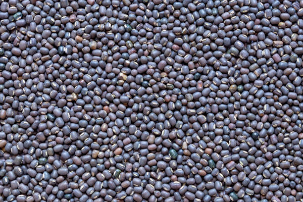
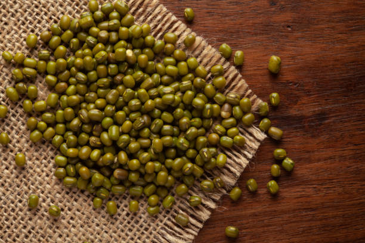

<html lang="en">

</html>

</html>

<head>
    <meta charset="UTF-8">
    <meta name="Generator" content="EditPlus®">
    <meta name="Author" content="">
    <meta name="Keywords" content="">
    <meta name="Description" content="">
    <meta name="viewport" content="width=device-width, initial-scale=1.0">
    <title>AD-GROWN</title>
    <style>
        @media (min-width: 1000px) {
            #a {
                display: flex;
            }

            .b {
                width: 280%;
            }

            .c {
                width: 180%;
            }
        }


        /* Style the container for the Google Translate Element */
        #google_translate_element_container {
            position: fixed;
            bottom: 10px;
            right: 10px;
            z-index: 9999;
            transition: box-shadow 0.3s ease;
            /* Add transition for a smoother effect */
        }

        /* Style the Google Translate Element */
        #google_translate_element {
            border: 1px solid rgba(255, 174, 0);
            /* Cyan border color */
            padding: 10px;
            background-color: #f0f8ff;
            /* AliceBlue background color */
            border-radius: 5px;
            box-shadow: 0 0 10px rgba(255, 174, 0);
            /* Initial box-shadow */
        }

        /* Add box-shadow when hovering over the container */
        #google_translate_element_container:hover {
            box-shadow: 0 0 5px rgb(255, 174, 0),
                0 0 25px rgb(255, 174, 0),
                0 0 50px rgb(255, 174, 0);
        }

        @media (max-width: 460px) {
            #imgX {
                height: 200px;
                width: 300px;
            }

        }
    </style>
    <script type="text/javascript"
        src="https://translate.google.com/translate_a/element.js?cb=googleTranslateElementInit"></script>
    <script type="text/javascript">
        function googleTranslateElementInit() {
            new google.translate.TranslateElement({ pageLanguage: 'tel', layout: google.translate.TranslateElement.InlineLayout }, 'google_translate_element');
        }
    </script>
</head>

<body>
    <div id="google_translate_element_container">
        <div id="google_translate_element"></div>
    </div>
    <!--మొక్కజొన్న అని కూడా పిలువబడే మొక్కజొన్న, ప్రపంచంలోని అనేక ప్రాంతాలలో ప్రధానమైన పంట.  మొక్కజొన్న యొక్క పెరుగుతున్న విధానం నాటడం నుండి కోత వరకు అనేక దశలను కలిగి ఉంటుంది.  మొక్కజొన్న సాగు విధానం యొక్క సంక్షిప్త అవలోకనం ఇక్కడ ఉంది:

 నేల తయారీ: 6.0-7.5 pHతో బాగా ఎండిపోయిన నేలలో మొక్కజొన్న బాగా పెరుగుతుంది.  మట్టిని 6-8 అంగుళాల లోతు వరకు దున్నాలి మరియు ఏవైనా కలుపు మొక్కలు లేదా రాళ్లను తొలగించాలి.

 నాటడం: మొక్కజొన్న సాధారణంగా వసంతకాలంలో పండిస్తారు, మంచు ప్రమాదం దాటిన తర్వాత.  విత్తనాలను 1-2 అంగుళాల లోతులో, 30-36 అంగుళాల దూరంలో ఉన్న వరుసలలో నాటాలి.

 అంకురోత్పత్తి: మొక్కజొన్న విత్తనాలు 7-10 రోజులలో మొలకెత్తుతాయి, నేల తేమగా మరియు ఉష్ణోగ్రత తగినంతగా ఉంటే.  విత్తనం ఒక చిన్న రూట్ మరియు రెమ్మను పంపుతుంది, ఇది చివరికి మొక్కజొన్న మొక్కగా పెరుగుతుంది.

 పెరుగుదల: మొక్కజొన్న మొక్క పెరుగుతూనే ఉంటుంది, ఆకులు మరియు కాండాలను అభివృద్ధి చేస్తుంది.  ఇది కూడా tassels మరియు చెవులు ఉత్పత్తి ప్రారంభమవుతుంది.

 పరాగసంపర్కం: మొక్క పైభాగంలో ఉన్న టాసెల్స్‌లో మగ పువ్వులు ఉంటాయి, చెవుల్లో ఆడ పువ్వులు ఉంటాయి.  టసెల్స్ నుండి పుప్పొడి చెవుల పట్టుపై పడినప్పుడు పరాగసంపర్కం జరుగుతుంది.

 చెవి అభివృద్ధి: చెవులు పరాగసంపర్కం జరిగిన తర్వాత, అవి కెర్నలు అభివృద్ధి చెందడం ప్రారంభిస్తాయి.  ప్రతి కెర్నల్ ఒక పట్టుకు జోడించబడి ఉంటుంది, ఇది చివరికి ఎండిపోయి పడిపోతుంది.

 హార్వెస్టింగ్: మొక్కజొన్న సాధారణంగా శరదృతువులో పండిస్తారు, చెవులు పూర్తిగా పరిపక్వం చెందినప్పుడు మరియు కాండాలు మరియు ఆకులు గోధుమ రంగులోకి మారుతాయి.  చెవులను చేతితో లేదా యాంత్రిక హార్వెస్టర్ ఉపయోగించి పండిస్తారు.

 మొత్తంమీద, మొక్కజొన్న సాగు విధానంలో జాగ్రత్తగా నేల తయారీ, సరైన సమయంలో నాటడం మరియు అంకురోత్పత్తి, పెరుగుదల, పరాగసంపర్కం మరియు చెవి అభివృద్ధికి సరైన పరిస్థితులను నిర్ధారించడం వంటివి ఉంటాయి.
jowar
జొన్న అని కూడా పిలువబడే జొన్న, దాని ధాన్యాల కోసం విస్తృతంగా పండించే తృణధాన్యాల పంట. జోవర్ పెరుగుదల ప్రక్రియను అనేక దశలుగా విభజించవచ్చు:

విత్తన ఎంపిక మరియు నాటడం: చేతితో లేదా మెకానికల్ ప్లాంటర్‌ని ఉపయోగించి నాటడానికి అధిక-నాణ్యత గల విత్తనాలను ఎంపిక చేస్తారు. విత్తనాలు బాగా తయారుచేసిన నేలలో, సాధారణంగా వరుసలలో పండిస్తారు.

అంకురోత్పత్తి మరియు మొలక దశ: నాటిన తరువాత, జొన్న గింజలు మొలకెత్తుతాయి మరియు మొలకలుగా పెరుగుతాయి. ఈ దశలో, బలమైన రూట్ వ్యవస్థను ఏర్పాటు చేయడానికి మరియు ఆరోగ్యకరమైన ఆకులను అభివృద్ధి చేయడానికి మొలకలకు తగినంత తేమ, వెచ్చదనం మరియు పోషకాలు అవసరం.

ఏపుగా పెరగడం: జొన్న మొక్కలు మంచి రూట్ వ్యవస్థను ఏర్పాటు చేసుకున్న తర్వాత, అవి ఏపుగా పెరగడంపై దృష్టి పెడతాయి. మొక్కలు పెద్దవిగా పెరుగుతాయి మరియు కిరణజన్య సంయోగక్రియ మరియు ధాన్యం ఉత్పత్తికి ముఖ్యమైన ఆకులు మరియు కొమ్మలను అభివృద్ధి చేస్తాయి. మొక్కలు ఆరోగ్యకరమైన పెరుగుదలను ప్రోత్సహించడానికి క్రమం తప్పకుండా నీటిపారుదల మరియు ఫలదీకరణం చేయబడతాయి.

పుష్పించే మరియు ధాన్యం ఏర్పడటం: దాదాపు 45-60 రోజుల పెరుగుదల తర్వాత, జొన్న మొక్కలు పుష్పాలను ఉత్పత్తి చేయడం ప్రారంభిస్తాయి. పువ్వులు గాలి లేదా స్వీయ-పరాగసంపర్కం ద్వారా పరాగసంపర్కం చేయబడతాయి. పరాగసంపర్కం తరువాత, పువ్వులు ధాన్యాలుగా అభివృద్ధి చెందుతాయి, ఇవి స్పైక్ లాంటి పానికిల్‌లో ఉంటాయి.

ధాన్యం పరిపక్వత మరియు హార్వెస్టింగ్: ధాన్యాలు పరిపక్వం చెందడానికి దాదాపు 90-120 రోజులు పడుతుంది, ఈ సమయంలో పానికిల్ లోపల ధాన్యాలు పెరుగుతాయి మరియు అభివృద్ధి చెందుతాయి. పానికిల్స్ ఆకుపచ్చ నుండి గోధుమ రంగులోకి మారుతాయి, అవి పూర్తిగా పరిపక్వం చెందాయని సూచిస్తున్నాయి. జొన్నను సాధారణంగా మొక్క నుండి కాయలను కత్తిరించి వాటిని నూర్పిడి చేయడం ద్వారా ధాన్యాలను మొక్కల పదార్థం నుండి వేరు చేయడం ద్వారా పండిస్తారు.

పంటకోత తర్వాత ప్రాసెసింగ్: పంట కోసిన తర్వాత, ధాన్యాలను శుభ్రం చేసి, ఏదైనా చెత్త లేదా దెబ్బతిన్న గింజలను తొలగించడానికి క్రమబద్ధీకరించబడతాయి. ధాన్యాలను ఆహారం, పశుగ్రాసం లేదా జీవ ఇంధన ఉత్పత్తికి ఉపయోగించవచ్చు.

మొత్తంమీద, జోవర్ యొక్క పెరుగుదల ఉష్ణోగ్రత, తేమ మరియు సూర్యకాంతి వంటి పర్యావరణ కారకాల సంక్లిష్ట పరస్పర చర్యను కలిగి ఉంటుంది, అలాగే మొక్క యొక్క పెరుగుదల మరియు అభివృద్ధిని నిర్ణయించే జన్యుపరమైన కారకాలు. ఆరోగ్యకరమైన మరియు ఉత్పాదక పంటను నిర్ధారించడానికి తగినంత నీటి నిర్వహణ, పోషకాల నిర్వహణ మరియు తెగులు నియంత్రణ చాలా ముఖ్యమైనవి.
సొర్గుమ్ 
పెడి 
చిల్లి 
మేజ్ -->
    <CENTER>
        <H1><strong>1. BLACK GRAM / 1.கருப்பு கிராம்</strong></H1>
    </CENTER>
    <center>
        
    </center>

    <DIV id="a" style="color:blue;justify-content:space-evenly;">
        <CENTER>
            <h2 class="notranslate" style="border:3px solid orange; color:BLACK;">
                <CENTER>
                    <h3>ENGLISH</h3>
                </CENTER>
                Black gram, also known as urad dal, is a valuable legume in Indian agriculture, known for its high
                protein content and various culinary uses. Here’s a detailed step-by-step mechanism for growing black
                gram from seed selection to harvesting:<br><br>
                1] <U> Seed Selection and Sowing:</U> <br>
                Start with selecting high-quality, disease-free black gram seeds. Seeds
                should be treated with fungicides to prevent soil-borne diseases. The optimal time for sowing is during
                the kharif season (June to July) when the soil temperature is warm. Seeds are sown 2-3 cm deep in
                well-prepared, well-drained soil, ideally in rows spaced 30-45 cm apart.<br><br>
                2] <U> Germination:</U> <br>
                Upon sowing, black gram seeds absorb moisture and begin to germinate. This process takes
                about 5-7 days under suitable conditions, with the radicle emerging first, followed by the shoot. Soil
                temperature around 25°C to 30°C promotes good germination.<br><br>
                3] <U> Vegetative Growth: </U> <br>
                After germination, the plant enters the vegetative growth phase. Black gram develops
                a strong root system and erect stems with broad leaves. The plant typically grows to about 60-90 cm in
                height. Adequate sunlight and moisture are crucial during this stage to ensure healthy leaf
                development.<br><br>
                4] <U> Flowering:</U> <br>
                Approximately 30-40 days after sowing, the plant begins to flower. The flowers are small and
                white, appearing in clusters. Black gram plants are primarily self-pollinating, which means they do not
                rely on external pollinators. This phase lasts for about 2-3 weeks.<br><br>
                5] <U> Pod Formation: </U> <br>
                After successful pollination, the flowers develop into pods. Each pod usually contains
                2-6 seeds. This stage is critical for the development of seeds, and it typically occurs 60-70 days after
                sowing. The plants should be monitored for moisture needs, as water stress can adversely affect pod
                formation.<br><br>
                6] <U> Pest and Disease Management: </U> <br>
                Black gram is susceptible to pests like aphids and diseases such as blight
                and wilt. Regular monitoring is essential. Integrated Pest Management (IPM) strategies, including the
                use of neem oil and insecticidal soaps, can effectively control pests. Crop rotation and resistant
                varieties help manage diseases.<br><br>
                7] <U> Seed Development: </U> <br>
                As the pods mature, seeds inside grow and harden. This maturation process lasts for
                about 20-30 days. The plant begins to yellow and dry out, indicating that the seeds are nearing
                maturity. Watering should be reduced to promote drying.<br><br>
                8] <U> Harvesting: </U> <br>
                Harvesting occurs when the pods are fully mature and dry, typically 90-110 days after
                sowing. The plants are cut at the base, and the pods are allowed to dry further in the field for a few
                days. Manual or mechanical threshing is used to separate the seeds from the pods.<br><br>
                9] <U> Post-Harvest Processing: </U> <br>
                After threshing, the seeds are cleaned and dried to remove any residual
                moisture. Proper storage in cool, dry conditions helps prevent spoilage and pest infestations.
                Containers should be airtight to protect against humidity.<br><br>
                10] <U> Pest Control in Storage: </U> <br>
                To ensure the longevity of stored black gram, use insect repellents or storage
                methods such as diatomaceous earth to prevent pest damage. Regular inspections are essential to maintain
                seed quality.<br><br>
                Throughout its growth, black gram thrives in warm climates with well-drained soils. Adequate care during
                each phase of its development can lead to a successful and bountiful harvest.
            </h2>
        </CENTER>

        <div class="a" id="translateThisSection" style="color:blACK; text-align:center;">
            <center>
                <h3 style="border:3px solid orange; color:BLACK;">
                    <CENTER>
                        <h1>தமிழ்</h1>
                    </CENTER>
                    உளுந்து, உளுந்து என்றும் அழைக்கப்படும், இந்திய விவசாயத்தில் மதிப்புமிக்க பருப்பு வகையாகும், இது அதிக
                    புரத உள்ளடக்கம் மற்றும் பல்வேறு சமையல் பயன்பாடுகளுக்கு பெயர் பெற்றது. விதை தேர்வு முதல் அறுவடை வரை
                    உளுந்து பயிரிடுவதற்கான விரிவான படிப்படியான வழிமுறை இங்கே:<br><br>
                    1] <U>விதை தேர்வு மற்றும் விதைப்பு: </U> <br>உயர்தர, நோயற்ற உளுந்து விதைகளைத் தேர்ந்தெடுப்பதில்
                    தொடங்கவும். மண்ணில் பரவும் நோய்களைத் தடுக்க விதைகளை பூஞ்சைக் கொல்லிகளால் நேர்த்தி செய்ய வேண்டும்.
                    விதைப்பதற்கு உகந்த நேரம் காரிஃப் பருவத்தில் (ஜூன் முதல் ஜூலை வரை) மண்ணின் வெப்பநிலை சூடாக இருக்கும்.
                    விதைகள் நன்கு தயாரிக்கப்பட்ட, நன்கு வடிகட்டிய மண்ணில் 2-3 செ.மீ ஆழத்தில் விதைக்கப்படுகின்றன, சிறந்த
                    வரிசைகளில் 30-45 செ.மீ இடைவெளியில்.<br><br>
                    2] <U>முளைப்பு: </U> <br>விதைத்தவுடன், உளுந்து விதைகள் ஈரப்பதத்தை உறிஞ்சி முளைக்க ஆரம்பிக்கும். இந்த
                    செயல்முறையானது தகுந்த சூழ்நிலையில் சுமார் 5-7 நாட்கள் எடுக்கும், முதலில் ரேடிக்கிள் வெளிப்பட்டு,
                    அதைத் தொடர்ந்து படமெடுக்கும். சுமார் 25°C முதல் 30°C வரை உள்ள மண்ணின் வெப்பநிலை நல்ல முளைப்பை
                    ஊக்குவிக்கிறது.<br><br>
                    3] <U>தாவர வளர்ச்சி: </U> <br>முளைத்த பிறகு, ஆலை தாவர வளர்ச்சி கட்டத்தில் நுழைகிறது. உளுந்து ஒரு
                    வலுவான வேர் அமைப்பை உருவாக்குகிறது மற்றும் பரந்த இலைகளுடன் கூடிய தண்டுகளை உருவாக்குகிறது. இந்த ஆலை
                    பொதுவாக 60-90 செமீ உயரம் வரை வளரும். ஆரோக்கியமான இலை வளர்ச்சியை உறுதி செய்ய போதுமான சூரிய ஒளி
                    மற்றும் ஈரப்பதம் இந்த கட்டத்தில் முக்கியமானது.<br><br>
                    4] <U> பூக்கும்: </U> <br>விதைத்த சுமார் 30-40 நாட்களுக்குப் பிறகு, செடி பூக்கத் தொடங்குகிறது.
                    பூக்கள் சிறியதாகவும் வெள்ளை நிறமாகவும், கொத்தாக தோன்றும். உளுந்து தாவரங்கள் முதன்மையாக சுய-மகரந்தச்
                    சேர்க்கை செய்கின்றன, அதாவது அவை வெளிப்புற மகரந்தச் சேர்க்கைகளை நம்புவதில்லை. இந்த கட்டம் சுமார் 2-3
                    வாரங்கள் நீடிக்கும்.<br><br>
                    5] <U> காய் உருவாக்கம்: </U> <br>வெற்றிகரமான மகரந்தச் சேர்க்கைக்குப் பிறகு, பூக்கள் காய்களாக
                    உருவாகின்றன. ஒவ்வொரு காய்களிலும் பொதுவாக 2-6 விதைகள் இருக்கும். இந்த நிலை விதைகளின் வளர்ச்சிக்கு
                    முக்கியமானது, பொதுவாக விதைத்த 60-70 நாட்களுக்குப் பிறகு இது நிகழ்கிறது. தாவரங்கள் ஈரப்பதம் தேவைக்காக
                    கண்காணிக்கப்பட வேண்டும், ஏனெனில் நீர் அழுத்தம் நெற்று உருவாவதை மோசமாக பாதிக்கும்.<br><br>
                    6] <U>பூச்சி மற்றும் நோய் மேலாண்மை: </U> <br>உளுந்து அசுவினி போன்ற பூச்சிகள் மற்றும் வாடல் மற்றும்
                    வாடல் போன்ற நோய்களுக்கு ஆளாகிறது. வழக்கமான கண்காணிப்பு அவசியம். ஒருங்கிணைந்த பூச்சி மேலாண்மை (IPM)
                    உத்திகள், வேப்ப எண்ணெய் மற்றும் பூச்சிக்கொல்லி சோப்புகளின் பயன்பாடு உட்பட, பூச்சிகளை திறம்பட
                    கட்டுப்படுத்த முடியும். பயிர் சுழற்சி மற்றும் நோய் எதிர்ப்பு ரகங்கள் நோய்களைக் கட்டுப்படுத்த
                    உதவுகின்றன.<br><br>
                    7] <U> விதை வளர்ச்சி: </U> <br>காய்கள் முதிர்ச்சியடையும் போது, ​​உள்ளே விதைகள் வளர்ந்து
                    கடினமடைகின்றன. இந்த முதிர்வு செயல்முறை சுமார் 20-30 நாட்கள் நீடிக்கும். செடி மஞ்சள் நிறமாகி உலரத்
                    தொடங்குகிறது, இது விதைகள் முதிர்ச்சியடைவதைக் குறிக்கிறது. உலர்த்துவதை ஊக்குவிக்க நீர்ப்பாசனம்
                    குறைக்கப்பட வேண்டும்.<br><br>
                    8] <U>அறுவடை: </U> <br>பொதுவாக விதைத்த 90-110 நாட்களுக்குப் பிறகு காய்கள் முழுமையாக
                    முதிர்ச்சியடைந்து காய்ந்தவுடன் அறுவடை நிகழ்கிறது. செடிகள் அடிவாரத்தில் வெட்டப்பட்டு, காய்கள் மேலும்
                    சில நாட்களுக்கு வயலில் உலர அனுமதிக்கப்படும். காய்களில் இருந்து விதைகளை பிரிக்க கைமுறை அல்லது இயந்திர
                    கதிரைப் பயன்படுத்தப்படுகிறது.<br><br>
                    9] <U>அறுவடைக்குப் பிந்தைய செயலாக்கம்: </U> <br>கதிரடித்த பிறகு, எஞ்சியிருக்கும் ஈரப்பதத்தை அகற்ற
                    விதைகள் சுத்தம் செய்யப்பட்டு உலர்த்தப்படுகின்றன. குளிர்ந்த, வறண்ட நிலையில் முறையான சேமிப்பது
                    கெட்டுப்போவதையும் பூச்சித் தாக்குதலையும் தடுக்க உதவுகிறது. ஈரப்பதத்திலிருந்து பாதுகாக்க கொள்கலன்கள்
                    காற்று புகாததாக இருக்க வேண்டும்.<br><br>
                    10] <U>சேமிப்பகத்தில் பூச்சி கட்டுப்பாடு: </U> <br>சேமிக்கப்பட்ட உளுந்து நீண்ட ஆயுளை உறுதி செய்ய,
                    பூச்சி சேதத்தைத் தடுக்க, பூச்சி விரட்டிகள் அல்லது டயட்டோமேசியஸ் எர்த் போன்ற சேமிப்பு முறைகளைப்
                    பயன்படுத்தவும். விதை தரத்தை பராமரிக்க வழக்கமான ஆய்வுகள் அவசியம்.<br><br>

                    அதன் வளர்ச்சி முழுவதும், உளுந்து நன்கு வடிகட்டிய மண்ணுடன் சூடான காலநிலையில் செழித்து வளரும். அதன்
                    வளர்ச்சியின் ஒவ்வொரு கட்டத்திலும் போதுமான கவனிப்பு வெற்றிகரமான மற்றும் ஏராளமான அறுவடைக்கு
                    வழிவகுக்கும்.
                </h3>
            </center>
            <audio controls src="TELANGANA/TP AUDIO\jowar.m4a"></audio>
            <h2>கேளுங்கள்</h2>
        </div>

    </DIV>

    <CENTER>
        <H1><strong>2. GREEN GRAM / 2.பச்சை கிராம்</strong></H1>
    </CENTER>
    <center>
        
    </center>

    <DIV id="a" style="color:blue;  justify-content:space-evenly;">
        <CENTER>
            <h2 class="notranslate" style="border:3px solid orange; color:BLACK;">
                <CENTER>
                    <h3>ENGLISH</h3>
                </CENTER>

                Green gram, also known as moong dal, is a highly nutritious legume widely cultivated in India. It is
                valued for its protein content and quick growth cycle. Below is a detailed step-by-step mechanism for
                growing green gram from seed selection to harvesting:<br><br>
                1] <U>Seed Selection and Sowing:</U> <br>
                Select high-quality, disease-free green gram seeds. It’s important to treat seeds with fungicides to
                minimize the risk of soil-borne diseases. Green gram is typically sown in the kharif season (June to
                July) or rabi season (October to November). Seeds are sown about 2-3 cm deep in well-drained soil, with
                rows spaced 30-45 cm apart.<br><br>
                2] <U>Germination:</U> <br>
                After sowing, the seeds absorb moisture and begin germinating. This process usually takes about 5-7
                days, provided the soil temperature is between 25°C and 30°C. The radicle (embryonic root) emerges
                first, followed by the shoot.<br><br>
                3] <U>Vegetative Growth:</U> <br>
                Once germinated, the plant enters the vegetative growth phase. Green gram develops a robust root system
                and erect stems with trifoliate leaves. The plant typically grows to a height of 30-60 cm. Adequate
                sunlight and moisture are crucial for healthy growth during this phase.<br><br>
                4] <U>Flowering:</U> <br>
                About 30-40 days after sowing, the plant begins to flower. The flowers are small, yellow, and often
                appear in clusters. Green gram is primarily self-pollinating, which means it does not require external
                pollinators. Flowering lasts for about 2-3 weeks, and favorable weather conditions are essential for
                optimal pollination.<br><br>
                5] <U>Pod Formation:</U> <br>
                Following successful pollination, flowers develop into pods. Each pod usually contains 4-6 seeds. This
                phase occurs approximately 60-70 days after sowing. Adequate moisture is important during pod formation
                to ensure good seed development.<br><br>
                6] <U>Pest and Disease Management:</U> <br>
                Green gram can be affected by pests such as aphids, pod borers, and diseases like bacterial blight and
                downy mildew. Regular monitoring is vital. Integrated Pest Management (IPM) practices, including neem
                oil applications and crop rotation, can effectively manage these issues.<br><br>
                7] <U>Seed Development:</U> <br>
                As pods mature, the seeds inside grow and harden over a period of about 20-30 days. The plants gradually
                begin to yellow and dry out, indicating the seeds are nearing maturity. Watering should be minimized to
                promote proper drying of the plants.<br><br>
                8] <U>Harvesting:</U> <br>
                Harvesting is done when the pods are fully mature and dry, typically 90-100 days after sowing. The
                plants are cut at the base, and the pods are left to dry in the field for a few days. Threshing can be
                done manually or mechanically to separate the seeds from the pods.<br><br>
                9] <U>Post-Harvest Processing:</U> <br>
                After threshing, the seeds are cleaned and dried to reduce moisture content. Proper storage is crucial
                to prevent spoilage and pest infestations. Seeds should be kept in cool, dry conditions, ideally in
                airtight containers.<br><br>
                10] <U>Pest Control in Storage:</U> <br>
                To protect stored green gram, consider using natural pest repellents or storage techniques like
                diatomaceous earth. Regular inspections of stored seeds are essential to maintain quality and prevent
                damage from insects.<br><br>

                Throughout its growth, green gram benefits from well-drained soil, adequate sunlight, and proper care
                during each phase to ensure a successful harvest.
            </h2>
        </CENTER>
        <div class="a" id="translateThisSection" style="color:blACK;   text-align:center;float:right;">
            <center>
                <h3 style="border:3px solid orange; color:BLACK;">
                    <CENTER>
                        <h1>தமிழ்</h1>
                    </CENTER>
                    மூங் பருப்பு என்றும் அழைக்கப்படும் பச்சைப்பயறு, இந்தியாவில் பரவலாக பயிரிடப்படும் அதிக சத்துள்ள
                    பருப்பு வகையாகும். அதன் புரத உள்ளடக்கம் மற்றும் விரைவான வளர்ச்சி சுழற்சிக்காக இது
                    மதிப்பிடப்படுகிறது. விதை தேர்வு முதல் அறுவடை வரை பச்சை பயிரை வளர்ப்பதற்கான விரிவான படிப்படியான
                    வழிமுறை கீழே உள்ளது:<br><br>

                    1] <U>விதை தேர்வு மற்றும் விதைப்பு: </U> <br>உயர்தர, நோயற்ற பச்சைப்பயறு விதைகளைத் தேர்ந்தெடுக்கவும்.
                    மண்ணினால் பரவும் நோய்களின் அபாயத்தைக் குறைக்க பூஞ்சைக் கொல்லிகளைக் கொண்டு விதைகளுக்கு
                    சிகிச்சையளிப்பது முக்கியம். பச்சைப்பயறு பொதுவாக காரிஃப் பருவத்தில் (ஜூன் முதல் ஜூலை வரை) அல்லது ராபி
                    பருவத்தில் (அக்டோபர் முதல் நவம்பர் வரை) விதைக்கப்படுகிறது. விதைகள் 2-3 செமீ ஆழத்தில் நன்கு வடிகட்டிய
                    மண்ணில் விதைக்கப்படுகின்றன, வரிசைகள் 30-45 செமீ இடைவெளியில் இருக்கும்.<br><br>

                    2] <U>முளைப்பு: </U> <br>விதைத்த பிறகு, விதைகள் ஈரப்பதத்தை உறிஞ்சி முளைக்க ஆரம்பிக்கும். மண்ணின்
                    வெப்பநிலை 25 டிகிரி செல்சியஸ் முதல் 30 டிகிரி செல்சியஸ் வரை இருந்தால், இந்த செயல்முறை பொதுவாக 5-7
                    நாட்கள் ஆகும். ரேடிகல் (கரு வேர்) முதலில் வெளிப்படுகிறது, அதைத் தொடர்ந்து சுடும்.<br><br>

                    3] <U>தாவர வளர்ச்சி: </U> <br>முளைத்தவுடன், ஆலை தாவர வளர்ச்சி கட்டத்தில் நுழைகிறது. பச்சைப்பயறு ஒரு
                    வலுவான வேர் அமைப்பை உருவாக்குகிறது மற்றும் முக்கோண இலைகளுடன் கூடிய தண்டுகளை உருவாக்குகிறது. இந்த ஆலை
                    பொதுவாக 30-60 செ.மீ உயரம் வரை வளரும். இந்த கட்டத்தில் ஆரோக்கியமான வளர்ச்சிக்கு போதுமான சூரிய ஒளி
                    மற்றும் ஈரப்பதம் முக்கியம்.<br><br>

                    4] <U>பூக்கும்: </U> <br>விதைத்த 30-40 நாட்களுக்குப் பிறகு, செடி பூக்கத் தொடங்குகிறது. பூக்கள்
                    சிறியதாகவும், மஞ்சள் நிறமாகவும், பெரும்பாலும் கொத்தாக காணப்படும். பச்சைப்பயறு முதன்மையாக
                    சுய-மகரந்தச் சேர்க்கை செய்கிறது, அதாவது அதற்கு வெளிப்புற மகரந்தச் சேர்க்கைகள் தேவையில்லை. பூக்கள்
                    சுமார் 2-3 வாரங்கள் நீடிக்கும், மேலும் உகந்த மகரந்தச் சேர்க்கைக்கு சாதகமான வானிலை அவசியம்.<br><br>

                    5] <U>காய் உருவாக்கம்: </U> <br>வெற்றிகரமான மகரந்தச் சேர்க்கைக்குப் பிறகு, பூக்கள் காய்களாக வளரும்.
                    ஒவ்வொரு காய்களிலும் பொதுவாக 4-6 விதைகள் இருக்கும். விதைத்த 60-70 நாட்களுக்குப் பிறகு இந்த கட்டம்
                    ஏற்படுகிறது. நல்ல விதை வளர்ச்சியை உறுதிப்படுத்த காய்கள் உருவாகும் போது போதுமான ஈரப்பதம்
                    முக்கியமானது.<br><br>

                    6] <U>பூச்சி மற்றும் நோய் மேலாண்மை: </U> <br>பச்சைப்பயறு அசுவினி, காய் துளைப்பான் போன்ற
                    பூச்சிகளாலும், பாக்டீரியல் ப்ளைட் மற்றும் பூஞ்சை காளான் போன்ற நோய்களாலும் பாதிக்கப்படலாம். வழக்கமான
                    கண்காணிப்பு முக்கியமானது. வேப்ப எண்ணெய் பயன்பாடுகள் மற்றும் பயிர் சுழற்சி உள்ளிட்ட ஒருங்கிணைந்த
                    பூச்சி மேலாண்மை (IPM) நடைமுறைகள் இந்த சிக்கல்களை திறம்பட நிர்வகிக்க முடியும்.<br><br>

                    7] <U>விதை வளர்ச்சி: </U> <br>காய்கள் முதிர்ச்சியடையும் போது, ​​உள்ளே இருக்கும் விதைகள் சுமார் 20-30
                    நாட்களுக்குள் வளர்ந்து கடினமடைகின்றன. செடிகள் படிப்படியாக மஞ்சள் நிறமாகி காய்ந்து, விதைகள்
                    முதிர்ச்சியடைவதைக் குறிக்கிறது. தாவரங்களின் சரியான உலர்த்தலை ஊக்குவிக்க நீர்ப்பாசனம் குறைக்கப்பட
                    வேண்டும்.<br><br>

                    8] <U>அறுவடை: </U> <br>பொதுவாக விதைத்த 90-100 நாட்களுக்குப் பிறகு காய்கள் முழுமையாக
                    முதிர்ச்சியடைந்து காய்ந்தவுடன் அறுவடை செய்யப்படுகிறது. செடிகளை அடிவாரத்தில் வெட்டி, காய்கள் சில
                    நாட்கள் வயலில் உலர வைக்கப்படும். காய்களில் இருந்து விதைகளை பிரிக்க கைமுறையாகவோ அல்லது இயந்திரமாகவோ
                    கதிரடிக்கலாம்.<br><br>

                    9] <U>அறுவடைக்குப் பிந்தைய செயலாக்கம்: </U> <br>கதிரடித்த பிறகு, விதைகள் சுத்தம் செய்யப்பட்டு
                    ஈரப்பதத்தைக் குறைக்க உலர்த்தப்படுகின்றன. கெட்டுப்போவதையும் பூச்சித் தொல்லையையும் தடுக்க சரியான
                    சேமிப்பு முக்கியமானது. விதைகளை குளிர்ந்த, உலர்ந்த நிலையில், காற்று புகாத கொள்கலன்களில் வைக்க
                    வேண்டும்.<br><br>

                    10] <U>சேமிப்பகத்தில் பூச்சி கட்டுப்பாடு: </U> <br>சேமிக்கப்பட்ட பச்சைப் பயிரை பாதுகாக்க, இயற்கை
                    பூச்சி விரட்டிகள் அல்லது டயட்டோமேசியஸ் எர்த் போன்ற சேமிப்பு நுட்பங்களைப் பயன்படுத்தவும். சேமித்து
                    வைக்கப்பட்டுள்ள விதைகளின் தரத்தை பராமரிக்கவும், பூச்சிகளால் சேதம் ஏற்படாமல் இருக்கவும் தொடர்ந்து
                    ஆய்வு செய்வது அவசியம்.<br><br>

                    அதன் வளர்ச்சி முழுவதும், பச்சைப்பயறு நன்கு வடிகட்டிய மண், போதுமான சூரிய ஒளி மற்றும் ஒவ்வொரு
                    கட்டத்திலும் சரியான பராமரிப்பு மூலம் வெற்றிகரமான அறுவடையை உறுதிசெய்யும்.

                </h3>
            </center>
            <audio controls src="TELANGANA/TP AUDIO\paddy.m4a"></audio>
            <h2>கேளுங்கள்</h2>
        </div>

    </DIV>

    <CENTER>
        <H1><strong>3. RED GRAM / 3.சிவப்பு கிராம்</strong></H1>
    </CENTER>
    <center>
        
    </center>
    <DIV id="a" style="color:blue; justify-content:space-evenly;">
        <CENTER>
            <h2 class="notranslate" style="border:3px solid orange; color:BLACK;">
                <CENTER>
                    <h3>ENGLISH</h3>
                </CENTER>
                Red gram, also known as pigeon pea or tur dal, is an important pulse crop in India, valued for its high
                protein content and adaptability to diverse environments. Here’s a detailed step-by-step mechanism of
                growing red gram from seed selection to harvesting:<br><br>
                1] <U> Seed Selection and Sowing:</U> <br>
                The first step is selecting high-quality, disease-resistant seeds suitable for the local climate. Seeds
                should be treated with fungicides to minimize the risk of soil-borne diseases. Red gram is typically
                sown during the Kharif season (June to September) or Rabi season (October to December). The seeds are
                planted about 2-4 cm deep in well-prepared, well-drained soil, ideally in rows spaced 30-45 cm
                apart.<br><br>
                2] <U> Germination:</U> <br>
                Once sown, red gram seeds absorb moisture from the soil and initiate the germination process. This
                typically occurs within 5-10 days, depending on soil temperature and moisture levels. The radicle (root)
                emerges first, followed by the shoot, which breaks through the soil surface.<br><br>
                3] <U> Vegetative Growth: </U> <br>
                During the vegetative stage, the plant grows rapidly. Red gram develops a deep taproot, which helps it
                access nutrients and moisture from deeper soil layers. The stem becomes erect and sturdy, and leaves are
                compound and trifoliate, emerging alternately along the stem.<br><br>
                4] <U> Flowering:</U> <br>
                Around 60-70 days after sowing, red gram plants begin to flower. The flowers are yellow and grow in
                clusters. Pollination occurs primarily through self-pollination, although some insect activity can
                enhance this process. Adequate water and sunlight are crucial during this stage to promote healthy
                flower development.<br><br>
                5] <U> Pod Formation: </U> <br>
                Following pollination, the flowers develop into pods. Each pod typically contains 2-6 seeds. Pod
                formation usually occurs about 70-90 days after sowing. The plant requires sufficient moisture and
                nutrients to ensure proper pod development and seed filling.<br><br>
                6] <U> Pest and Disease Management: </U> <br>
                Red gram is susceptible to various pests, including pod borers and aphids, as well as diseases like wilt
                and blight. Regular monitoring is essential. Integrated pest management strategies, including crop
                rotation, biological control, and judicious use of pesticides, can help manage pest populations
                effectively.<br><br>
                7] <U> Seed Development: </U> <br>
                As the pods mature, the seeds inside grow and harden. This stage typically occurs 90-120 days after
                sowing. During this time, the plant begins to dry out, indicating that the seeds are nearing maturity.
                The moisture content in the pods decreases, which is crucial for successful harvesting.<br><br>
                8] <U> Harvesting: </U> <br>
                Red gram is harvested when the pods turn brown and the seeds inside are hard. This usually occurs around
                120-150 days after sowing. Harvesting is typically done manually by cutting the plants or pulling them
                up by hand. It’s important to harvest at the right time to avoid seed shattering.<br><br>
                9] <U> Post-Harvest Processing: </U> <br>
                After harvesting, the plants are allowed to dry in the sun for a few days. The seeds are then separated
                from the pods through threshing. Cleaning the seeds to remove debris and foreign materials is essential
                for maintaining quality.<br><br>
                10] <U> Storage and Pest Control: </U> <br>
                Post-harvest, seeds should be stored in cool, dry conditions to prevent moisture absorption and pest
                infestations. To protect stored seeds from insects like weevils, storage facilities should be
                well-ventilated. Using pesticides or traditional methods like neem leaves can also help deter
                pests.<br><br>
                Throughout the growing process, red gram relies on well-drained soil, proper irrigation, and effective
                pest management to achieve optimal yields. The plant's adaptability makes it a valuable crop for various
                farming systems in India.


            </h2>
        </CENTER>
        <div class="b" id="translateThisSection" style="color:blACK;   text-align:center;float:right;">
            <center>
                <h3 style="border:3px solid orange; color:BLACK;">
                    <CENTER>
                        <h1>தமிழ்</h1>
                    </CENTER>
                    செம்பருத்தி, புறா பட்டாணி அல்லது துவரம் பருப்பு என்றும் அழைக்கப்படுகிறது, இது இந்தியாவில் ஒரு
                    முக்கியமான பயறு பயிராகும், அதன் உயர் புரத உள்ளடக்கம் மற்றும் பல்வேறு சூழல்களுக்கு ஏற்றவாறு
                    மதிப்பிடப்படுகிறது. விதை தேர்வு முதல் அறுவடை வரை செம்பருத்தியை வளர்ப்பதற்கான விரிவான படிப்படியான
                    வழிமுறை இங்கே:<br><br>

                    1] <U> விதை தேர்வு மற்றும் விதைப்பு: </U> <br>முதல் படி உள்ளூர் காலநிலைக்கு ஏற்ற உயர்தர, நோய்
                    எதிர்ப்பு விதைகளைத் தேர்ந்தெடுப்பது. மண்ணினால் பரவும் நோய்களின் அபாயத்தைக் குறைக்க, விதைகளை பூஞ்சைக்
                    கொல்லிகளால் நேர்த்தி செய்ய வேண்டும். செம்பருத்தி பொதுவாக காரீஃப் பருவத்தில் (ஜூன் முதல் செப்டம்பர்
                    வரை) அல்லது ராபி பருவத்தில் (அக்டோபர் முதல் டிசம்பர் வரை) விதைக்கப்படுகிறது. விதைகள் நன்கு
                    தயாரிக்கப்பட்ட, நன்கு வடிகட்டிய மண்ணில் சுமார் 2-4 செ.மீ ஆழத்தில் நடப்படுகிறது, சிறந்த வரிசைகளில்
                    30-45 செ.மீ இடைவெளியில் நடப்படுகிறது.<br><br>

                    2] <U> முளைப்பு: </U> <br>விதைத்தவுடன், செம்பருத்தி விதைகள் மண்ணிலிருந்து ஈரப்பதத்தை உறிஞ்சி
                    முளைக்கும் செயல்முறையைத் தொடங்குகின்றன. இது பொதுவாக மண்ணின் வெப்பநிலை மற்றும் ஈரப்பதத்தின் அளவைப்
                    பொறுத்து 5-10 நாட்களுக்குள் நிகழ்கிறது. ரேடிகல் (வேர்) முதலில் வெளிப்படுகிறது, அதைத் தொடர்ந்து
                    தளிர், இது மண்ணின் மேற்பரப்பை உடைக்கிறது.<br><br>

                    3] <U> தாவர வளர்ச்சி: </U> <br>தாவர நிலையில், தாவரம் வேகமாக வளரும். செம்பருத்தி ஆழமான டேப்ரூட்டை
                    உருவாக்குகிறது, இது ஆழமான மண் அடுக்குகளிலிருந்து ஊட்டச்சத்துக்கள் மற்றும் ஈரப்பதத்தை அணுக உதவுகிறது.
                    தண்டு நிமிர்ந்து உறுதியானதாக மாறும், மேலும் இலைகள் கூட்டு மற்றும் மும்மடங்கு, தண்டு முழுவதும் மாறி
                    மாறி வெளிப்படும்.<br><br>

                    4] <U>பூக்கும்: </U> <br>விதைத்த 60-70 நாட்களில், செம்பருத்தி செடிகள் பூக்க ஆரம்பிக்கும். பூக்கள்
                    மஞ்சள் நிறத்தில் கொத்தாக வளரும். மகரந்தச் சேர்க்கை முதன்மையாக சுய-மகரந்தச் சேர்க்கை மூலம்
                    நிகழ்கிறது, இருப்பினும் சில பூச்சி செயல்பாடு இந்த செயல்முறையை மேம்படுத்தலாம். இந்த கட்டத்தில்
                    ஆரோக்கியமான பூக்களின் வளர்ச்சியை ஊக்குவிக்க போதுமான தண்ணீர் மற்றும் சூரிய ஒளி முக்கியமானது.<br><br>

                    5] <U>காய் உருவாக்கம்: </U> <br>மகரந்தச் சேர்க்கையைத் தொடர்ந்து, பூக்கள் காய்களாக உருவாகின்றன.
                    ஒவ்வொரு காய்களிலும் பொதுவாக 2-6 விதைகள் இருக்கும். பொதுவாக விதைத்த 70-90 நாட்களுக்குப் பிறகு காய்கள்
                    உருவாகும். சரியான காய் வளர்ச்சி மற்றும் விதை நிரப்புதல் ஆகியவற்றை உறுதி செய்ய தாவரத்திற்கு போதுமான
                    ஈரப்பதம் மற்றும் ஊட்டச்சத்துக்கள் தேவை.<br><br>

                    6] <U>பூச்சி மற்றும் நோய் மேலாண்மை: </U> <br>செம்பருத்தியானது காய் துளைப்பான்கள் மற்றும் அசுவினி
                    உள்ளிட்ட பல்வேறு பூச்சிகளுக்கும், வாடல் மற்றும் வாடல் நோய் போன்ற நோய்களுக்கும் ஆளாகிறது. வழக்கமான
                    கண்காணிப்பு அவசியம். பயிர் சுழற்சி, உயிரியல் கட்டுப்பாடு மற்றும் பூச்சிக்கொல்லிகளின் நியாயமான
                    பயன்பாடு உள்ளிட்ட ஒருங்கிணைந்த பூச்சி மேலாண்மை உத்திகள், பூச்சிகளின் எண்ணிக்கையை திறம்பட நிர்வகிக்க
                    உதவும்.<br><br>

                    7] <U>விதை வளர்ச்சி: </U> <br>காய்கள் முதிர்ச்சியடையும் போது, ​​உள்ளே இருக்கும் விதைகள் வளர்ந்து
                    கெட்டியாகும். இந்த நிலை பொதுவாக விதைத்த 90-120 நாட்களுக்குப் பிறகு ஏற்படும். இந்த நேரத்தில், ஆலை
                    வறண்டு போகத் தொடங்குகிறது, இது விதைகள் முதிர்ச்சியடைவதைக் குறிக்கிறது. காய்களில் ஈரப்பதம் குறைகிறது,
                    இது வெற்றிகரமான அறுவடைக்கு முக்கியமானது.
                    <br><br>

                    8] <U>அறுவடை: </U> <br>காய்கள் பழுப்பு நிறமாகி, உள்ளே இருக்கும் விதைகள் கடினமாக இருக்கும் போது
                    செம்பருத்தி அறுவடை செய்யப்படுகிறது. இது வழக்கமாக விதைத்த 120-150 நாட்களுக்குப் பிறகு நிகழ்கிறது.
                    அறுவடை பொதுவாக தாவரங்களை வெட்டுவதன் மூலம் அல்லது கையால் மேலே இழுப்பதன் மூலம் கைமுறையாக
                    செய்யப்படுகிறது. விதைகள் சிதைவதைத் தவிர்க்க சரியான நேரத்தில் அறுவடை செய்வது முக்கியம்.<br><br>

                    9] <U>அறுவடைக்குப் பிந்தைய செயலாக்கம்: </U> <br>அறுவடைக்குப் பின், செடிகள் வெயிலில் சில நாட்கள் உலர
                    வைக்கப்படும். பின்னர் விதைகள் காய்களிலிருந்து கதிரடித்தல் மூலம் பிரிக்கப்படுகின்றன. குப்பைகள்
                    மற்றும் வெளிநாட்டு பொருட்களை அகற்ற விதைகளை சுத்தம் செய்வது தரத்தை பராமரிக்க அவசியம்.
                    <br><br>

                    10]<U>சேமிப்பு மற்றும் பூச்சி கட்டுப்பாடு: </U> <br>அறுவடைக்குப் பின், விதைகளை ஈரப்பதம் உறிஞ்சுதல்
                    மற்றும் பூச்சித் தாக்குதலைத் தடுக்க, குளிர்ந்த, உலர்ந்த நிலையில் சேமிக்க வேண்டும். சேமித்த விதைகளை
                    அந்துப்பூச்சிகள் போன்ற பூச்சிகளிடமிருந்து பாதுகாக்க, சேமிப்பு வசதிகள் நன்கு காற்றோட்டமாக இருக்க
                    வேண்டும். பூச்சிக்கொல்லிகள் அல்லது வேப்ப இலைகள் போன்ற பாரம்பரிய முறைகளைப் பயன்படுத்துவதும்
                    பூச்சிகளைத் தடுக்க உதவும்.<br><br>

                    வளரும் செயல்முறை முழுவதும், செம்பருத்தி நன்கு வடிகட்டிய மண், முறையான நீர்ப்பாசனம் மற்றும் பயனுள்ள
                    பூச்சி மேலாண்மை ஆகியவற்றைச் சார்ந்து உகந்த விளைச்சலைப் பெறுகிறது. தாவரத்தின் தகவமைப்புத் தன்மை
                    இந்தியாவில் உள்ள பல்வேறு விவசாய முறைகளுக்கு மதிப்புமிக்க பயிராக அமைகிறது.
                </h3>
            </center>
            <audio controls src="TELANGANA/TP AUDIO\cotton.m4a"></audio>
            <h2>கேளுங்கள்</h2>
        </div>


    </DIV>

    <CENTER>
        <H1><strong>4. HORSE GRAM / 4.குதிரை கிராம்</strong></H1>
    </CENTER>
    <center>
        
    </center>

    <DIV id="a" style="color:blue;  justify-content:space-evenly;">
        <CENTER>
            <h2 class="notranslate" style="border:3px solid orange; color:BLACK;">
                <CENTER>
                    <h3>ENGLISH</h3>
                </CENTER>
                Horse gram is a nutritious pulse crop native to India, known for its high protein and iron content. It
                is a hardy plant that thrives in dry regions and poor soils. Here’s a detailed step-by-step mechanism
                for growing horse gram from seed selection to harvesting:<br><br>
                1] <U>Seed Selection and Sowing:</U> <br>
                Begin by selecting high-quality, disease-resistant seeds. Horse gram seeds should be treated with
                fungicides to minimize disease risks. The best time to sow is during the Kharif season (June to
                September). Seeds are sown about 2-3 cm deep in well-drained soil, typically in rows spaced 30-40 cm
                apart.<br><br>
                2] <U>Germination:</U> <br>
                After sowing, seeds absorb moisture and begin to germinate within 5-10 days, depending on soil
                temperature and moisture. The radicle emerges first, followed by the shoot breaking through the soil
                surface. Horse gram germinates best in warm soil.<br><br>
                3] <U>Vegetative Growth:</U> <br>
                During this stage, the horse gram plant develops a robust taproot system that helps it access moisture
                and nutrients from deeper soil layers. The plant grows erect, with trifoliate leaves emerging
                alternately along the stem. This phase lasts for about 30-45 days.<br><br>
                4] <U>Flowering:</U> <br>
                Flowering typically begins 60-70 days after sowing. Horse gram produces small, yellowish flowers in
                clusters. The plant is self-pollinating, which means it can produce seeds without requiring external
                pollinators. Adequate sunlight and moderate moisture are essential for healthy flowering.<br><br>
                5] <U>Pod Formation:</U> <br>
                After pollination, pods begin to develop, usually 70-90 days post-sowing. Each pod typically contains
                4-6 seeds. Proper water supply and soil nutrients are crucial during this phase for healthy pod and seed
                development.<br><br>
                6] <U>Pest and Disease Management:</U> <br>
                Horse gram is relatively resistant to pests and diseases but can still be affected by pests like aphids
                and caterpillars, as well as diseases such as leaf spots and blights. Regular monitoring is important.
                Use integrated pest management practices, such as crop rotation and organic pesticides, to control pests
                effectively.<br><br>
                7] <U>Seed Development:</U> <br>
                As the pods mature, seeds grow and harden. This stage occurs about 90-120 days after sowing. The plant
                starts to dry, indicating that the seeds are nearing maturity. Lower moisture content in the pods is
                vital for successful harvesting.<br><br>
                8] <U>Harvesting:</U> <br>
                Horse gram is harvested when the pods turn brown and the seeds are hard. This typically happens around
                120-150 days after sowing. Harvesting is usually done manually by cutting the plants or pulling them
                out. Timing is crucial to prevent seed shattering.<br><br>
                9] <U>Post-Harvest Processing:</U> <br>
                After harvesting, allow the plants to dry in the sun for a few days. Seeds are then separated from the
                pods through threshing. It’s important to clean the seeds thoroughly to remove any debris and maintain
                quality.<br><br>
                10] <U>Storage and Pest Control:</U> <br>
                Store dried seeds in a cool, dry place to prevent moisture absorption and pest infestations. Good
                ventilation in storage facilities is essential. Use neem leaves or appropriate pesticides to deter pests
                such as weevils.<br><br>

                Throughout the growth process, horse gram requires minimal irrigation and thrives in poor soils, making
                it an excellent choice for sustainable agriculture in dry regions. Its nutritional benefits further
                enhance its value as a staple pulse crop in India.
            </h2>
        </CENTER>

        <div class="a" id="translateThisSection" style="color:blACK;   text-align:center;float:right;">
            <center>
                <h3 style="border:3px solid orange; color:BLACK;">
                    <CENTER>
                        <h1>தமிழ்</h1>
                    </CENTER>
                    குதிரைவாலி இந்தியாவை பூர்வீகமாகக் கொண்ட ஒரு சத்தான பயறு வகை பயிர் ஆகும், இது அதிக புரதம் மற்றும்
                    இரும்புச்சத்துக்காக அறியப்படுகிறது. இது வறண்ட பகுதிகள் மற்றும் மோசமான மண்ணில் வளரும் ஒரு கடினமான
                    தாவரமாகும். விதை தேர்வு முதல் அறுவடை வரை குதிரைவாலியை வளர்ப்பதற்கான விரிவான படிப்படியான வழிமுறை
                    இங்கே:<br><br>
                    1] <U>விதை தேர்வு மற்றும் விதைப்பு: </U> <br>உயர்தர, நோய் எதிர்ப்புத் திறன் கொண்ட விதைகளைத்
                    தேர்ந்தெடுப்பதன் மூலம் தொடங்கவும். நோய் அபாயத்தைக் குறைக்க குதிரைவாலி விதைகளை பூஞ்சைக் கொல்லிகளைக்
                    கொண்டு சிகிச்சையளிக்க வேண்டும். விதைப்பதற்கு சிறந்த நேரம் காரீஃப் பருவம் (ஜூன் முதல் செப்டம்பர்
                    வரை). விதைகள் நன்கு வடிகட்டிய மண்ணில் 2-3 செ.மீ ஆழத்தில் விதைக்கப்படுகின்றன, பொதுவாக வரிசைகளில்
                    30-40 செ.மீ இடைவெளியில்.<br><br>

                    2] <U> முளைப்பு: </U> <br>விதைத்த பிறகு, விதைகள் ஈரப்பதத்தை உறிஞ்சி, மண்ணின் வெப்பநிலை மற்றும்
                    ஈரப்பதத்தைப் பொறுத்து 5-10 நாட்களுக்குள் முளைக்க ஆரம்பிக்கும். ரேடிகல் முதலில் வெளிப்படுகிறது, அதைத்
                    தொடர்ந்து தளிர் மண்ணின் மேற்பரப்பை உடைக்கிறது. வெதுவெதுப்பான மண்ணில் குதிரைவாலி சிறப்பாக
                    முளைக்கும்.<br><br>

                    3] <U>தாவர வளர்ச்சி: </U> <br>இந்த கட்டத்தில், குதிரைவாலி செடியானது ஆழமான மண் அடுக்குகளில் இருந்து
                    ஈரப்பதம் மற்றும் ஊட்டச்சத்துக்களை அணுக உதவும் ஒரு வலுவான டேப்ரூட் அமைப்பை உருவாக்குகிறது. செடியானது
                    நிமிர்ந்து வளரும், ட்ரைஃபோலியேட் இலைகள் தண்டு முழுவதும் மாறி மாறி வெளிப்படும். இந்த நிலை சுமார்
                    30-45 நாட்கள் நீடிக்கும்.<br><br>

                    4] <U>பூக்கும்: </U> <br>பொதுவாக விதைத்த 60-70 நாட்களுக்குப் பிறகு பூக்கும். குதிரைவாலி சிறிய,
                    மஞ்சள் நிற பூக்களை கொத்தாக உருவாக்குகிறது. இந்த ஆலை சுய மகரந்தச் சேர்க்கை செய்கிறது, அதாவது
                    வெளிப்புற மகரந்தச் சேர்க்கைகள் தேவையில்லாமல் விதைகளை உற்பத்தி செய்ய முடியும். ஆரோக்கியமான
                    பூக்களுக்கு போதுமான சூரிய ஒளி மற்றும் மிதமான ஈரப்பதம் அவசியம்.<br><br>

                    5] <U>காய் உருவாக்கம்: </U> <br>மகரந்தச் சேர்க்கைக்குப் பிறகு, பொதுவாக விதைத்த 70-90 நாட்களில்
                    காய்கள் உருவாகத் தொடங்கும். ஒவ்வொரு காய்களிலும் பொதுவாக 4-6 விதைகள் இருக்கும். ஆரோக்கியமான காய்
                    மற்றும் விதை வளர்ச்சிக்கு இந்த கட்டத்தில் முறையான நீர் வழங்கல் மற்றும் மண் ஊட்டச்சத்துக்கள்
                    முக்கியமானவை.<br><br>

                    6] <U>பூச்சி மற்றும் நோய் மேலாண்மை: </U> <br>குதிரைவாலியானது பூச்சிகள் மற்றும் நோய்களுக்கு
                    ஒப்பீட்டளவில் எதிர்ப்புத் திறன் கொண்டது, ஆனால் அசுவினி மற்றும் கம்பளிப்பூச்சி போன்ற பூச்சிகளாலும்,
                    இலைப்புள்ளிகள் மற்றும் கருகல் போன்ற நோய்களாலும் இன்னும் பாதிக்கப்படலாம். வழக்கமான கண்காணிப்பு
                    முக்கியம். பூச்சிகளை திறம்பட கட்டுப்படுத்த பயிர் சுழற்சி மற்றும் கரிம பூச்சிக்கொல்லிகள் போன்ற
                    ஒருங்கிணைந்த பூச்சி மேலாண்மை நடைமுறைகளைப் பயன்படுத்தவும்.<br><br>

                    7] <U>விதை வளர்ச்சி: </U> <br>காய்கள் முதிர்ச்சியடையும் போது, ​​விதைகள் வளர்ந்து கெட்டியாகும்.
                    விதைத்த 90-120 நாட்களுக்குப் பிறகு இந்த நிலை ஏற்படுகிறது. ஆலை உலரத் தொடங்குகிறது, இது விதைகள்
                    முதிர்ச்சியடைவதைக் குறிக்கிறது. காய்களில் ஈரப்பதம் குறைவாக இருப்பது வெற்றிகரமான அறுவடைக்கு
                    இன்றியமையாதது.<br><br>

                    8] <U> அறுவடை: </U> <br>காய்கள் பழுப்பு நிறமாகி, விதைகள் கடினமாக இருக்கும் போது குதிரைவாலி அறுவடை
                    செய்யப்படுகிறது. இது பொதுவாக விதைத்த 120-150 நாட்களுக்குப் பிறகு நடக்கும். அறுவடை பொதுவாக தாவரங்களை
                    வெட்டுவதன் மூலம் அல்லது அவற்றை வெளியே இழுப்பதன் மூலம் கைமுறையாக செய்யப்படுகிறது. விதைகள் சிதைவதைத்
                    தடுக்க நேரம் முக்கியமானது.<br><br>

                    9] <U>அறுவடைக்குப் பிந்தைய செயலாக்கம்: </U> <br>அறுவடைக்குப் பின், செடிகளை வெயிலில் சில நாட்கள் உலர
                    வைக்கவும். பின்னர் விதைகள் காய்களிலிருந்து கதிரடித்தல் மூலம் பிரிக்கப்படுகின்றன. எந்த குப்பைகளையும்
                    அகற்றி தரத்தை பராமரிக்க விதைகளை நன்கு சுத்தம் செய்வது முக்கியம்.<br><br>

                    10] <U>சேமிப்பு மற்றும் பூச்சி கட்டுப்பாடு: </U> <br>ஈரப்பதத்தை உறிஞ்சுதல் மற்றும் பூச்சி
                    தாக்குதல்களைத் தடுக்க உலர்ந்த விதைகளை குளிர்ந்த, உலர்ந்த இடத்தில் சேமிக்கவும். சேமிப்பு வசதிகளில்
                    நல்ல காற்றோட்டம் அவசியம். அந்துப்பூச்சி போன்ற பூச்சிகளைத் தடுக்க வேப்ப இலைகள் அல்லது பொருத்தமான
                    பூச்சிக்கொல்லிகளைப் பயன்படுத்தவும்.<br><br>

                    வளர்ச்சி செயல்முறை முழுவதும், குதிரைக்கு குறைந்தபட்ச நீர்ப்பாசனம் தேவைப்படுகிறது மற்றும் ஏழை மண்ணில்
                    செழித்து வளரும், இது வறண்ட பகுதிகளில் நிலையான விவசாயத்திற்கு சிறந்த தேர்வாக அமைகிறது. அதன்
                    ஊட்டச்சத்து நன்மைகள் இந்தியாவில் ஒரு பிரதான பயறு பயிராக அதன் மதிப்பை மேலும் அதிகரிக்கின்றன.
                </h3>
            </center>
            <audio controls src="TELANGANA/TP AUDIO\wheat.m4a"></audio>
            <h2>கேளுங்கள்</h2>
        </div>

    </DIV>

    <CENTER>
        <H1><strong>5. GROUNDNUT / 5. நிலக்கடலை</strong></H1>
    </CENTER>
    <center>
        
    </center>
    <DIV id="a" style="color:blue;  justify-content:space-evenly; ">
        <CENTER>
            <h2 class="notranslate" style="border:3px solid orange; color:BLACK;">
                <CENTER>
                    <h3>ENGLISH</h3>
                </CENTER>
                Groundnuts, commonly known as peanuts, are a leguminous crop that is widely cultivated in India. They
                are valued for their edible seeds, oil, and protein content. Below is the step-by-step growing mechanism
                for groundnuts from seed selection to harvesting:<br><br>
                1] <U> Seed Selection:</U> <br>
                Groundnut cultivation begins with the selection of high-quality seeds that are disease-free and have
                high germination rates. Varieties should be chosen based on local conditions and desired yield.
                Certified seeds from reputable sources are recommended.<br><br>
                2] <U> Soil Preparation:</U> <br>
                Groundnuts prefer well-drained, sandy loam to loamy soil. Before planting, the soil should be plowed and
                leveled. Incorporating organic matter, such as compost, improves soil fertility and structure. Soil pH
                should be maintained between 6.0 and 6.5 for optimal growth.<br><br>
                3] <U> Sowing: </U> <br>
                Groundnut seeds are typically sown at the beginning of the monsoon season, around June to July in India.
                Seeds should be planted 1-2 inches deep, with a spacing of 20-30 cm between plants and rows. This
                ensures adequate air circulation and sunlight.<br><br>
                4] <U> Germination:</U> <br>
                Germination occurs within 7-10 days after sowing, depending on soil moisture and
                temperature. The seed absorbs water, swelling and eventually leading to the emergence of the shoot and
                root. Adequate soil moisture is critical during this phase.<br><br>
                5] <U> Vegetative Growth: </U> <br>
                After germination, groundnut plants enter a rapid vegetative growth phase. They
                develop a sprawling habit, producing numerous leaves that capture sunlight for photosynthesis. Root
                development is crucial, as groundnuts are unique in that they form pegs that grow into the soil.<br><br>
                6] <U> Flowering: </U> <br>
                Groundnut plants typically flower about 30-40 days after sowing. The flowers are small,
                yellow, and grow close to the ground. After pollination, the fertilized flowers develop into pegs, which
                elongate and penetrate the soil to form pods.<br><br>
                7] <U> Pod Formation: </U> <br>
                The pegs that grow into the soil develop into pods, each containing 1-4 seeds. This
                process occurs about 60-90 days after planting. The plant requires adequate moisture and nutrients
                during this critical phase to support pod development.<br><br>
                8] <U> Water and Nutrient Management: </U> <br>
                Groundnuts require moderate irrigation, particularly during flowering and
                pod development. Fertilization with balanced NPK (nitrogen, phosphorus, potassium) fertilizers is
                essential to ensure healthy growth. Organic amendments can further enhance soil fertility.<br><br>
                9] <U> Pest and Disease Management: </U> <br>
                Common pests include leaf minor and thrips, while diseases like wilt and
                rust can affect the crop. Regular monitoring is essential. Integrated Pest Management (IPM) strategies,
                including crop rotation and biological control, can help manage pests effectively.<br><br>
                10] <U> Maturation: </U> <br>
                Groundnuts typically mature about 90-150 days after planting, depending on the variety. The
                leaves begin to yellow, indicating that the pods are ready for harvest. Proper timing is crucial to
                prevent over-maturation, which can lead to pod splitting.<br><br>
                11] <U> Harvesting: </U> <br>
                Harvesting is done manually or mechanically, depending on the scale of cultivation. The
                plants are carefully uprooted to avoid damaging the pods. Harvesting should occur on a dry day to
                minimize soil clinging to the pods.<br><br>
                12] <U> Post-Harvest Processing: </U> <br>
                After harvesting, groundnuts should be sun-dried to reduce moisture content.
                This step is crucial for preventing spoilage and enhancing storage life. Once dried, the pods can be
                stored in cool, dry conditions to protect against pests and moisture.<br><br>
                Throughout the growing process, groundnuts require careful management of soil moisture, nutrients, and
                pest control to ensure a healthy and productive crop. Their unique growth habit, with pegs forming
                underground pods, makes them an interesting and valuable crop.
            </h2>
        </CENTER>


        <div class="c" style="color:blACK;   text-align:center;float:right;">
            <center>
                <h3 style="border:3px solid orange; color:BLACK;">
                    <CENTER>
                        <h1>தமிழ்</h1>
                    </CENTER>
                    பொதுவாக வேர்க்கடலை என்று அழைக்கப்படும் நிலக்கடலை, இந்தியாவில் பரவலாகப் பயிரிடப்படும் ஒரு பயறு வகைப்
                    பயிராகும். அவை உண்ணக்கூடிய விதைகள், எண்ணெய் மற்றும் புரத உள்ளடக்கத்திற்காக மதிப்பிடப்படுகின்றன. விதை
                    தேர்வு முதல் அறுவடை வரை நிலக்கடலைக்கான படிப்படியான வளரும் வழிமுறை கீழே உள்ளது:<br><br>

                    1] <U> விதை தேர்வு:</U> <br> நிலக்கடலை சாகுபடியானது நோயற்ற மற்றும் அதிக முளைப்பு விகிதங்களைக் கொண்ட
                    உயர்தர விதைகளைத் தேர்ந்தெடுப்பதன் மூலம் தொடங்குகிறது. உள்ளூர் நிலைமைகள் மற்றும் விரும்பிய
                    விளைச்சலின் அடிப்படையில் ரகங்களைத் தேர்ந்தெடுக்க வேண்டும். புகழ்பெற்ற ஆதாரங்களில் இருந்து
                    சான்றளிக்கப்பட்ட விதைகள் பரிந்துரைக்கப்படுகிறது.<br><br>

                    2] <U>மண் தயாரிப்பு: </U> <br>நிலக்கடலை களிமண் மண்ணை விட நன்கு வடிகட்டிய, மணல் கலந்த களிமண்ணை
                    விரும்புகிறது. நடவு செய்வதற்கு முன், மண்ணை உழுது சமன் செய்ய வேண்டும். உரம் போன்ற கரிமப் பொருட்களைச்
                    சேர்ப்பது மண்ணின் வளத்தையும் கட்டமைப்பையும் மேம்படுத்துகிறது. உகந்த வளர்ச்சிக்கு மண்ணின் அமிலத்தன்மை
                    6.0 முதல் 6.5 வரை பராமரிக்கப்பட வேண்டும்.<br><br>

                    3] <U> விதைப்பு:</U> <br> நிலக்கடலை விதைகள் பொதுவாக இந்தியாவில் ஜூன் முதல் ஜூலை வரை மழைக்காலத்தின்
                    தொடக்கத்தில் விதைக்கப்படுகின்றன. விதைகளை 1-2 அங்குல ஆழத்தில், செடிகளுக்கும் வரிசைகளுக்கும் இடையே
                    20-30 செ.மீ இடைவெளியில் நடவு செய்ய வேண்டும். இது போதுமான காற்று சுழற்சி மற்றும் சூரிய ஒளியை உறுதி
                    செய்கிறது.<br><br>

                    4] <U> முளைப்பு:</U> <br> மண்ணின் ஈரப்பதம் மற்றும் வெப்பநிலையைப் பொறுத்து விதைத்த 7-10 நாட்களுக்குள்
                    முளைப்பு ஏற்படுகிறது. விதை தண்ணீரை உறிஞ்சி, வீக்கம் மற்றும் இறுதியில் தளிர் மற்றும் வேர்
                    தோன்றுவதற்கு வழிவகுக்கிறது. இந்த கட்டத்தில் போதுமான மண்ணின் ஈரப்பதம் முக்கியமானது.<br><br>

                    5] <U> தாவர வளர்ச்சி:</U> <br> முளைத்த பிறகு, நிலக்கடலை தாவரங்கள் விரைவான தாவர வளர்ச்சி கட்டத்தில்
                    நுழைகின்றன. அவை பரவலான பழக்கத்தை உருவாக்குகின்றன, ஒளிச்சேர்க்கைக்காக சூரிய ஒளியைப் பிடிக்கும்
                    ஏராளமான இலைகளை உருவாக்குகின்றன. வேர் வளர்ச்சி மிகவும் முக்கியமானது, ஏனெனில் நிலக்கடலை மண்ணில் வளரும்
                    ஆப்புகளை உருவாக்குகிறது.<br><br>

                    6] <U> பூக்கும்:</U> <br> நிலக்கடலை செடிகள் பொதுவாக விதைத்த 30-40 நாட்களுக்குப் பிறகு பூக்கும்.
                    பூக்கள் சிறியதாகவும், மஞ்சள் நிறமாகவும், தரையில் நெருக்கமாக வளரும். மகரந்தச் சேர்க்கைக்குப் பிறகு,
                    கருவுற்ற பூக்கள் ஆப்புகளாக உருவாகின்றன, அவை நீண்டு மண்ணில் ஊடுருவி காய்களை உருவாக்குகின்றன.<br><br>

                    7] <U> காய் உருவாக்கம்: </U> <br>மண்ணில் வளரும் ஆப்புகள் ஒவ்வொன்றும் 1-4 விதைகள் கொண்ட காய்களாக
                    உருவாகின்றன. நடவு செய்த 60-90 நாட்களுக்குப் பிறகு இந்த செயல்முறை நிகழ்கிறது. இந்த முக்கியமான
                    கட்டத்தில் காய் வளர்ச்சியை ஆதரிக்க தாவரத்திற்கு போதுமான ஈரப்பதம் மற்றும் ஊட்டச்சத்துக்கள்
                    தேவைப்படுகின்றன.<br><br>

                    8] <U> நீர் மற்றும் ஊட்டச்சத்து மேலாண்மை: </U> <br>நிலக்கடலைக்கு மிதமான நீர்ப்பாசனம் தேவைப்படுகிறது,
                    குறிப்பாக பூக்கும் மற்றும் காய் வளர்ச்சியின் போது. சீரான NPK (நைட்ரஜன், பாஸ்பரஸ், பொட்டாசியம்)
                    உரங்களுடன் உரமிடுதல் ஆரோக்கியமான வளர்ச்சியை உறுதி செய்ய அவசியம். கரிம திருத்தங்கள் மண் வளத்தை மேலும்
                    அதிகரிக்கலாம்.<br><br>

                    9] <U> பூச்சி மற்றும் நோய் மேலாண்மை: </U> <br>பொதுவான பூச்சிகளில் இலை மைனர் மற்றும் த்ரிப்ஸ் ஆகியவை
                    அடங்கும், அதே நேரத்தில் வாடல் மற்றும் துரு போன்ற நோய்கள் பயிரை பாதிக்கும். வழக்கமான கண்காணிப்பு
                    அவசியம். பயிர் சுழற்சி மற்றும் உயிரியல் கட்டுப்பாடு உள்ளிட்ட ஒருங்கிணைந்த பூச்சி மேலாண்மை (IPM)
                    உத்திகள், பூச்சிகளை திறம்பட நிர்வகிக்க உதவும்.<br><br>

                    10] <U>முதிர்வு:</U> <br>நிலக்கடலை பொதுவாக நடவு செய்த 90-150 நாட்களுக்குப் பிறகு, வகையைப் பொறுத்து
                    முதிர்ச்சியடையும். இலைகள் மஞ்சள் நிறமாக மாறத் தொடங்குகின்றன, இது காய்கள் அறுவடைக்குத் தயாராக
                    இருப்பதைக் குறிக்கிறது. அதிக முதிர்ச்சியைத் தடுக்க சரியான நேரம் முக்கியமானது, இது காய்கள்
                    பிளவுபடுவதற்கு வழிவகுக்கும்.<br><br>

                    11] <U>அறுவடை:</U> <br>சாகுபடியின் அளவைப் பொறுத்து, அறுவடை கைமுறையாகவோ அல்லது இயந்திரமாகவோ
                    செய்யப்படுகிறது. காய்களை சேதப்படுத்தாமல் இருக்க செடிகள் கவனமாக பிடுங்கப்படுகின்றன. காய்களில் மண்
                    ஒட்டிக்கொண்டிருப்பதைக் குறைக்க உலர்ந்த நாளில் அறுவடை செய்ய வேண்டும்.<br><br>

                    12] <U>அறுவடைக்குப் பிந்தைய செயலாக்கம்:</U> <br>அறுவடை செய்த பின், நிலக்கடலையை வெயிலில் காய வைத்து
                    ஈரப்பதத்தைக் குறைக்க வேண்டும். கெட்டுப்போவதைத் தடுப்பதற்கும் சேமிப்பக ஆயுளை அதிகரிப்பதற்கும் இந்த
                    நடவடிக்கை முக்கியமானது. காய்ந்ததும், காய்களை குளிர்ந்த, வறண்ட நிலையில் சேமித்து வைத்து, பூச்சிகள்
                    மற்றும் ஈரப்பதத்திலிருந்து பாதுகாக்கலாம்.<br><br>

                    வளரும் செயல்முறை முழுவதும், நிலக்கடலைக்கு மண்ணின் ஈரப்பதம், ஊட்டச்சத்துக்கள் மற்றும் பூச்சி
                    கட்டுப்பாடு ஆகியவை ஆரோக்கியமான மற்றும் விளைச்சலை உறுதி செய்ய கவனமாக மேலாண்மை செய்ய வேண்டும்.
                    அவற்றின் தனித்துவமான வளர்ச்சிப் பழக்கம், நிலத்தடி காய்களை உருவாக்கும் ஆப்புகளுடன், அவற்றை ஒரு
                    சுவாரஸ்யமான மற்றும் மதிப்புமிக்க பயிராக ஆக்குகிறது.
                </h3>
            </center>
            <audio controls src="TELANGANA/TP AUDIO\maize.m4a"></audio>
            <h2>கேளுங்கள்</h2>
        </div>


    </DIV>

    <CENTER>
        <H1><strong>6. COCONUT / 6.தேங்காய்</strong></H1>
    </CENTER>
    <center>
        
    </center>
    <DIV id="a" style="color:blue;  justify-content:space-evenly;">
        <CENTER>
            <h2 class="notranslate" style="border:3px solid orange; color:BLACK;">
                <CENTER>
                    <h3>ENGLISH</h3>
                </CENTER>
                Coconuts are versatile palms widely cultivated in tropical regions, particularly in India. They thrive
                in sandy, well-drained soils and are known for their numerous uses, including food, oil, and crafts.
                Below is the step-by-step growing mechanism for coconuts from seed selection to harvesting:<br><br>

                1] <U>Seed Selection:</U> <br>Coconut cultivation begins with the selection of healthy, mature coconuts.
                The best seeds are those that float in water, indicating they are fresh and viable. The seeds should
                ideally be from hybrid or high-yielding varieties to ensure better productivity.<br><br>


                2] <U>Pre-Germination Treatment:</U> <br>
                Before planting, the selected coconuts can be soaked in water for 2-3 days to enhance germination. This
                treatment helps soften the hard outer shell, making it easier for the seed to sprout.<br><br>


                3] <U>Planting:</U> <br>
                Coconuts can be planted directly in the soil or in nursery beds. When planting in the field, they should
                be positioned upright in pits that are about 2-3 feet deep and spaced 7-10 meters apart. The ideal
                planting time is at the beginning of the monsoon season.<br><br>


                4] <U>Germination:</U><br>
                Germination typically occurs 3-6 months after planting. The seed absorbs moisture, and the embryo starts
                to develop. The first visible sign is the emergence of a shoot, while the roots begin to grow downward.
                Coconuts often take 6-12 months to fully sprout.<br><br>


                5] <U>Initial Growth:</U> <br>
                After germination, the coconut palm enters the vegetative phase. The shoot grows upward, and leaves
                begin to emerge from the top. Young palms require protection from strong winds and direct sunlight.
                During this phase, it's crucial to keep the soil moist and free from weeds.<br><br>

                6] <U>Development of Leaves and Roots:</U><br>
                As the palm grows, it develops a fan-shaped crown of leaves. Coconuts can produce up to 30 leaves a
                year. The root system expands horizontally and vertically, helping the palm anchor itself and access
                nutrients and water.<br><br>

                7] <U>Flowering:</U><br>
                Coconut palms begin to flower around 5-7 years after planting. They produce both male and female flowers
                on the same inflorescence. Pollination occurs naturally through wind and insects. The flowers are
                usually white or yellow, and successful pollination leads to fruit development.<br><br>

                8] <U>Fruit Development:</U><br>
                Once pollinated, the female flowers develop into coconuts. The fruit takes about 11-12 months to mature.
                Initially green, coconuts turn brown as they ripen. During this time, the palm continues to grow and may
                produce multiple clusters of coconuts.<br><br>

                9] <U>Water and Nutrient Management:</U><br>
                Coconut palms require regular watering, especially in dry periods. They benefit from balanced
                fertilization with nitrogen, phosphorus, and potassium to enhance fruit production. Organic matter, such
                as compost, can be added to improve soil fertility.<br><br>

                10] <U>Pest and Disease Management:</U><br>
                Coconuts are susceptible to pests like the coconut mite and diseases such as bud rot. Regular monitoring
                is essential. Integrated Pest Management (IPM) practices, including biological control and the use of
                neem-based pesticides, can help manage infestations effectively.<br><br>

                11] <U>Harvesting:</U><br>
                Coconuts are usually ready for harvest 6-12 months after flowering. Harvesting is done manually, using
                long poles with hooks to pick mature coconuts from the palm. It is important to harvest at the right
                time to ensure optimal quality and taste.<br><br>

                12] <U>Post-Harvest Processing:</U><br>
                After harvesting, coconuts are processed based on their intended use. For example, they can be cracked
                open for water and meat or dried for copra production. Proper handling and storage are crucial to
                prevent spoilage.<br><br>

                Throughout the growing process, coconuts require adequate sunlight, water, and nutrient management to
                thrive, ensuring a bountiful harvest for various uses.


            </h2>
        </CENTER>
        <div class="a" id="translateThisSection" style="color:blACK;  text-align:center;float:right;">
            <center>
                <h3 style="border:3px solid orange; color:BLACK;">
                    <CENTER>
                        <h1>தமிழ்</h1>
                    </CENTER>
                    தென்னைகள் வெப்பமண்டல பகுதிகளில், குறிப்பாக இந்தியாவில் பரவலாக பயிரிடப்படும் பல்துறை பனை ஆகும். அவை
                    மணல், நன்கு வடிகட்டிய மண்ணில் செழித்து வளரும் மற்றும் உணவு, எண்ணெய் மற்றும் கைவினைப்பொருட்கள் உட்பட
                    பல பயன்பாடுகளுக்கு அறியப்படுகின்றன. விதை தேர்வு முதல் அறுவடை வரை தென்னைக்கான படிப்படியான வளரும்
                    வழிமுறை கீழே உள்ளது.<br><br>

                    1] <U> விதை தேர்வு:</U> <br> ஆரோக்கியமான, முதிர்ந்த தேங்காய்களைத் தேர்ந்தெடுப்பதன் மூலம் தென்னை
                    சாகுபடி தொடங்குகிறது. சிறந்த விதைகள் தண்ணீரில் மிதக்கின்றன, அவை புதியவை மற்றும் சாத்தியமானவை
                    என்பதைக் குறிக்கிறது. விதைகள் சிறந்த விளைச்சலை உறுதி செய்வதற்காக கலப்பின அல்லது அதிக மகசூல் தரும்
                    வகைகளில் இருந்து இருக்க வேண்டும்.<br><br>

                    2] <U>முளைப்பதற்கு முந்தைய சிகிச்சை: </U> <br>நடவு செய்வதற்கு முன், தேர்ந்தெடுக்கப்பட்ட தேங்காய்களை
                    2-3 நாட்கள் தண்ணீரில் ஊறவைத்தால் முளைப்பு அதிகரிக்கும். இந்த சிகிச்சையானது கடினமான வெளிப்புற ஓட்டை
                    மென்மையாக்க உதவுகிறது, இது விதை முளைப்பதை எளிதாக்குகிறது.<br><br>

                    3] <U> நடவு:</U> <br> தென்னையை நேரடியாக மண்ணிலோ நாற்றங்கால் பாத்திகளிலோ நடலாம். வயலில் நடவு செய்யும்
                    போது, ​​2-3 அடி ஆழமுள்ள மற்றும் 7-10 மீட்டர் இடைவெளியில் குழிகளை நிமிர்ந்து வைக்க வேண்டும்.
                    பருவமழையின் தொடக்கத்தில் நடவு செய்வதற்கு ஏற்ற நேரம்.<br><br>

                    4] <U> முளைப்பு:</U> <br> பொதுவாக நடவு செய்த 3-6 மாதங்களுக்குப் பிறகு முளைப்பு ஏற்படுகிறது. விதை
                    ஈரப்பதத்தை உறிஞ்சி, கரு உருவாகத் தொடங்குகிறது. முதல் புலப்படும் அறிகுறி ஒரு தளிர் தோற்றம் ஆகும், அதே
                    நேரத்தில் வேர்கள் கீழ்நோக்கி வளர ஆரம்பிக்கின்றன. தேங்காய்கள் முழுமையாக முளைக்க 6-12 மாதங்கள்
                    ஆகும்.<br><br>

                    5] <U> ஆரம்ப வளர்ச்சி:</U> <br> முளைத்த பிறகு, தேங்காய் பனை தாவர கட்டத்தில் நுழைகிறது. தளிர்
                    மேல்நோக்கி வளரும், மற்றும் இலைகள் மேலே இருந்து வெளிவர ஆரம்பிக்கும். இளம் உள்ளங்கைகளுக்கு வலுவான
                    காற்று மற்றும் நேரடி சூரிய ஒளியில் இருந்து பாதுகாப்பு தேவைப்படுகிறது. இந்த கட்டத்தில், மண்ணை
                    ஈரப்பதமாகவும், களைகள் இல்லாததாகவும் வைத்திருப்பது முக்கியம்.<br><br>

                    6] <U> இலைகள் மற்றும் வேர்களின் வளர்ச்சி:</U> <br> பனை வளரும் போது, ​​அது இலைகளின் விசிறி வடிவ
                    கிரீடம் உருவாகிறது. தென்னையில் ஆண்டுக்கு 30 இலைகள் வரை விளையும். வேர் அமைப்பு கிடைமட்டமாகவும்
                    செங்குத்தாகவும் விரிவடைந்து, பனை நங்கூரம் மற்றும் ஊட்டச்சத்துக்கள் மற்றும் தண்ணீரை அணுக
                    உதவுகிறது.<br><br>

                    7] <U> பூக்கும்: </U> <br>நடவு செய்த 5-7 ஆண்டுகளுக்குப் பிறகு தென்னை மரங்கள் பூக்க ஆரம்பிக்கும். அவை
                    ஒரே மஞ்சரியில் ஆண் மற்றும் பெண் பூக்களை உருவாக்குகின்றன. மகரந்தச் சேர்க்கை இயற்கையாக காற்று மற்றும்
                    பூச்சிகள் மூலம் நிகழ்கிறது. மலர்கள் பொதுவாக வெள்ளை அல்லது மஞ்சள் நிறத்தில் இருக்கும், மேலும்
                    வெற்றிகரமான மகரந்தச் சேர்க்கை பழ வளர்ச்சிக்கு வழிவகுக்கிறது.<br><br>

                    8] <U> பழ வளர்ச்சி: </U> <br>மகரந்தச் சேர்க்கை செய்தவுடன், பெண் பூக்கள் தேங்காய்களாக உருவாகின்றன.
                    பழம் முதிர்ச்சியடைய 11-12 மாதங்கள் ஆகும். ஆரம்பத்தில் பச்சை நிறத்தில் இருக்கும் தேங்காய் பழுத்தவுடன்
                    பழுப்பு நிறமாக மாறும். இந்த நேரத்தில், பனை தொடர்ந்து வளர்ந்து பல கொத்து தேங்காய்களை உற்பத்தி
                    செய்யலாம்.<br><br>

                    9] <U> நீர் மற்றும் ஊட்டச்சத்து மேலாண்மை: </U> <br>தென்னை மரங்களுக்கு வழக்கமான நீர்ப்பாசனம்
                    தேவைப்படுகிறது, குறிப்பாக வறண்ட காலங்களில். பழ உற்பத்தியை அதிகரிக்க நைட்ரஜன், பாஸ்பரஸ் மற்றும்
                    பொட்டாசியத்துடன் சீரான உரமிடுவதன் மூலம் அவை பயனடைகின்றன. மண் வளத்தை மேம்படுத்த உரம் போன்ற கரிமப்
                    பொருட்களை சேர்க்கலாம்.<br><br>

                    10] <U>பூச்சி மற்றும் நோய் மேலாண்மை:</U> <br>தென்னை பூச்சி போன்ற பூச்சிகள் மற்றும் மொட்டு அழுகல்
                    போன்ற நோய்களால் தென்னைகள் பாதிக்கப்படுகின்றன. வழக்கமான கண்காணிப்பு அவசியம். ஒருங்கிணைந்த பூச்சி
                    மேலாண்மை (IPM) நடைமுறைகள், உயிரியல் கட்டுப்பாடு மற்றும் வேம்பு அடிப்படையிலான பூச்சிக்கொல்லிகளின்
                    பயன்பாடு உள்ளிட்டவை, தாக்குதலை திறம்பட நிர்வகிக்க உதவும்.<br><br>

                    11] <U>அறுவடை:</U> <br>பொதுவாக தேங்காய்கள் பூக்கும் 6-12 மாதங்களுக்குப் பிறகு அறுவடைக்குத்
                    தயாராகிவிடும். பனையில் இருந்து முதிர்ந்த தேங்காய்களை பறிக்க கொக்கிகள் கொண்ட நீண்ட கம்புகளைப்
                    பயன்படுத்தி கைமுறையாக அறுவடை செய்யப்படுகிறது. உகந்த தரம் மற்றும் சுவையை உறுதிப்படுத்த சரியான
                    நேரத்தில் அறுவடை செய்வது முக்கியம்.<br><br>

                    12] <U>அறுவடைக்குப் பிந்தைய செயலாக்கம்:</U> <br>அறுவடைக்குப் பிறகு, தேங்காய்கள் அவற்றின் நோக்கம்
                    கொண்ட பயன்பாட்டின் அடிப்படையில் பதப்படுத்தப்படுகின்றன. உதாரணமாக, அவை தண்ணீர் மற்றும் இறைச்சிக்காக
                    திறக்கப்படலாம் அல்லது கொப்பரை உற்பத்திக்காக உலர்த்தப்படலாம். கெட்டுப்போவதைத் தடுக்க சரியான கையாளுதல்
                    மற்றும் சேமிப்பு முக்கியமானது.<br><br>

                    வளரும் செயல்முறை முழுவதும், தேங்காய்கள் செழிக்க போதுமான சூரிய ஒளி, நீர் மற்றும் ஊட்டச்சத்து மேலாண்மை
                    தேவைப்படுகிறது, இது பல்வேறு பயன்பாடுகளுக்கு ஏராளமான அறுவடையை உறுதி செய்கிறது.
                </h3>
            </center>
            <audio controls src="TELANGANA/TP AUDIO\chilli.m4a"></audio>
            <h2>கேளுங்கள்</h2>
        </div>


    </DIV>

    <CENTER>
        <H1><strong>7. COTTON / 7.பருத்தி</strong></H1>
    </CENTER>
    <center>
        
    </center>

    <DIV id="a" style="color:blue;  justify-content:space-evenly;">
        <CENTER>
            <h2 class="notranslate" style="border:3px solid orange; color:BLACK;">
                <CENTER>
                    <h3>ENGLISH</h3>
                </CENTER>
                Cotton is a crucial cash crop in India, known for its fibers used in textiles. Here’s a detailed
                step-by-step mechanism for growing cotton from seed selection to harvesting:<br><br>
                1] <U>Seed Selection and Sowing:</U> <br>
                Begin by selecting high-quality, certified cotton seeds that are disease-resistant and suited to your
                region's climate. Cotton is typically sown in the kharif season (April to June). Seeds should be planted
                1-2 inches deep in well-drained, fertile soil, with rows spaced 75-90 cm apart.<br><br>
                2] <U>Germination:</U> <br>
                After sowing, cotton seeds absorb moisture and begin to swell. The radicle (embryonic root) emerges
                first, followed by the shoot. Germination usually occurs within 7-10 days under optimal soil
                temperatures of 20°C to 30°C.<br><br>
                3] <U>Vegetative Growth:</U> <br>
                Once germinated, the cotton plant enters the vegetative growth phase. The plant develops a sturdy stem
                and broad leaves. Adequate sunlight and water are essential during this phase for healthy growth, as
                cotton plants can reach heights of 1-2 meters.<br><br>
                4] <U>Flowering:</U> <br>
                Approximately 50-60 days after sowing, cotton plants start to flower. The flowers are initially white
                and then turn pink before falling off, leading to the formation of cotton bolls. This phase is critical
                for pollination, which primarily occurs through wind and insects.<br><br>
                5] <U>Pod (Boll) Formation:</U> <br>
                After flowering, cotton bolls begin to develop, usually 70-90 days after sowing. Each boll can contain
                several seeds surrounded by soft fibers. During this stage, maintaining proper moisture levels is
                essential for the healthy development of the bolls.<br><br>
                6] <U>Pest and Disease Management:</U> <br>
                Cotton is susceptible to pests like cotton bollworm, aphids, and diseases such as wilt and root rot.
                Implement integrated pest management (IPM) strategies, including crop rotation, biological control, and
                the use of resistant varieties. Regular monitoring and timely application of organic pesticides like
                neem oil can help manage pest populations effectively.<br><br>
                7] <U>Seed Development:</U> <br>
                As the bolls mature, the seeds inside grow, and the fibers expand. This maturation process lasts about
                30-40 days, during which the bolls will open when ready, revealing the fluffy cotton fibers. It’s
                crucial to monitor the moisture content to prevent diseases.<br><br>
                8] <U>Harvesting:</U> <br>
                Cotton is typically ready for harvest 150-180 days after sowing, indicated by the opening of the bolls
                and the fluffy cotton fibers becoming visible. Harvesting can be done manually or with mechanized
                equipment. Timely harvesting is important to prevent losses from shattering or degradation.<br><br>
                9] <U>Post-Harvest Processing:</U> <br>
                After harvesting, cotton needs to be ginned to separate the fibers from the seeds. The cotton fibers are
                cleaned and pressed into bales, while the seeds can be processed for oil extraction or used for
                planting.After harvesting, cotton needs to be ginned to separate the fibers from the seeds. The cotton
                fibers are cleaned and pressed into bales, while the seeds can be processed for oil extraction or used
                for planting.<br><br>
                10] <U>Pest Control in Storage:</U> <br>
                To protect stored cotton fibers from pests like weevils, ensure they are stored in well-ventilated, dry
                conditions. Using natural repellents such as dried neem leaves or mothballs can help deter pests during
                storage.<br><br>
                Throughout its growth cycle, cotton requires well-drained soil, adequate moisture, and effective pest
                management to ensure a healthy and productive harvest.

            </h2>
        </CENTER>
        <div class="b" id="translateThisSection" style="color:blACK;  text-align:center;float:right;">
            <center>
                <h3 style="border:3px solid orange; color:BLACK;">
                    <CENTER>
                        <h1>தமிழ்</h1>
                    </CENTER>
                    பருத்தி இந்தியாவில் ஒரு முக்கியமான பணப்பயிராகும், இது ஜவுளியில் பயன்படுத்தப்படும் இழைகளுக்கு பெயர்
                    பெற்றது. விதை தேர்வு முதல் அறுவடை வரை பருத்தியை வளர்ப்பதற்கான விரிவான படிப்படியான வழிமுறை
                    இங்கே:<br><br>

                    1] <U> விதை தேர்வு மற்றும் விதைப்பு: </U> <br>உயர்தர, சான்றளிக்கப்பட்ட பருத்தி விதைகளைத்
                    தேர்ந்தெடுப்பதன் மூலம் தொடங்குங்கள், அவை நோய் எதிர்ப்புத் திறன் கொண்டவை மற்றும் உங்கள்
                    பிராந்தியத்தின் காலநிலைக்கு ஏற்றவை. பருத்தி பொதுவாக காரிஃப் பருவத்தில் (ஏப்ரல் முதல் ஜூன் வரை)
                    விதைக்கப்படுகிறது. விதைகளை 1-2 அங்குல ஆழத்தில் நன்கு வடிகட்டிய, வளமான மண்ணில், வரிசைகள் 75-90 செ.மீ
                    இடைவெளியில் நட வேண்டும்.<br><br>

                    2] <U> முளைப்பு: </U> <br>விதைத்த பிறகு, பருத்தி விதைகள் ஈரப்பதத்தை உறிஞ்சி வீங்கத் தொடங்கும்.
                    ரேடிகல் (கரு வேர்) முதலில் வெளிப்படுகிறது, அதைத் தொடர்ந்து சுடும். முளைப்பு பொதுவாக 7-10
                    நாட்களுக்குள் 20 ° C முதல் 30 ° C வரை உகந்த மண் வெப்பநிலையில் நிகழ்கிறது.<br><br>

                    3] <U> தாவர வளர்ச்சி: </U> <br>முளைத்தவுடன், பருத்தி செடி தாவர வளர்ச்சி கட்டத்தில் நுழைகிறது. ஆலை
                    ஒரு உறுதியான தண்டு மற்றும் பரந்த இலைகளை உருவாக்குகிறது. பருத்தி செடிகள் 1-2 மீட்டர் உயரத்தை எட்டும்
                    என்பதால், ஆரோக்கியமான வளர்ச்சிக்கு இந்த கட்டத்தில் போதுமான சூரிய ஒளி மற்றும் நீர் அவசியம்.<br><br>

                    4] <U>பூக்கும்: </U> <br>விதைத்த சுமார் 50-60 நாட்களில் பருத்தி செடிகள் பூக்க ஆரம்பிக்கும். பூக்கள்
                    ஆரம்பத்தில் வெள்ளை நிறத்தில் இருக்கும், பின்னர் உதிர்வதற்கு முன் இளஞ்சிவப்பு நிறமாக மாறும், இது
                    பருத்தி உருளைகள் உருவாக வழிவகுக்கிறது. இந்த கட்டம் மகரந்தச் சேர்க்கைக்கு முக்கியமானது, இது
                    முதன்மையாக காற்று மற்றும் பூச்சிகள் மூலம் நிகழ்கிறது.<br><br>

                    5] <U>பாட் (போல்) உருவாக்கம்: </U> <br>பொதுவாக விதைத்த 70-90 நாட்களுக்குப் பிறகு பூக்கும் பிறகு,
                    பருத்தி காய்கள் உருவாகத் தொடங்கும். ஒவ்வொரு காய்களும் மென்மையான இழைகளால் சூழப்பட்ட பல விதைகளைக்
                    கொண்டிருக்கலாம். இந்த கட்டத்தில், காய்களின் ஆரோக்கியமான வளர்ச்சிக்கு சரியான ஈரப்பதத்தை பராமரிப்பது
                    அவசியம்.<br><br>

                    6] <U>பூச்சி மற்றும் நோய் மேலாண்மை: </U> <br>பருத்தி காய்ப்புழு, அசுவினி போன்ற பூச்சிகள் மற்றும்
                    வாடல் மற்றும் வேர் அழுகல் போன்ற நோய்களுக்கு பருத்தி எளிதில் பாதிக்கப்படுகிறது. பயிர் சுழற்சி,
                    உயிரியல் கட்டுப்பாடு மற்றும் எதிர்ப்புத் திறன் கொண்ட ரகங்களின் பயன்பாடு உள்ளிட்ட ஒருங்கிணைந்த பூச்சி
                    மேலாண்மை (IPM) உத்திகளை செயல்படுத்தவும். வேப்ப எண்ணெய் போன்ற கரிம பூச்சிக்கொல்லிகளின் வழக்கமான
                    கண்காணிப்பு மற்றும் சரியான நேரத்தில் பயன்பாடு பூச்சிகளின் எண்ணிக்கையை திறம்பட நிர்வகிக்க
                    உதவும்.<br><br>

                    7] <U>விதை வளர்ச்சி: </U> <br>உருளைகள் முதிர்ச்சியடையும் போது, ​​உள்ளே விதைகள் வளரும், மற்றும்
                    இழைகள் விரிவடைகின்றன. இந்த முதிர்வு செயல்முறை சுமார் 30-40 நாட்கள் நீடிக்கும், இதன் போது உருண்டைகள்
                    தயாராக இருக்கும்போது திறக்கும், பஞ்சுபோன்ற பருத்தி இழைகளை வெளிப்படுத்தும். நோய்களைத் தடுக்க
                    ஈரப்பதத்தை கண்காணிப்பது முக்கியம்.
                    <br><br>

                    8] <U>அறுவடை: </U> <br>பருத்தி பொதுவாக விதைத்த 150-180 நாட்களுக்குப் பிறகு அறுவடைக்குத் தயாராக
                    இருக்கும், இது உருளைகள் திறக்கப்பட்டு பஞ்சுபோன்ற பருத்தி இழைகள் தெரியும். அறுவடையை கைமுறையாகவோ
                    அல்லது இயந்திரமயமாக்கப்பட்ட கருவிகள் மூலமாகவோ செய்யலாம். சிதைவு அல்லது சிதைவிலிருந்து இழப்புகளைத்
                    தடுக்க சரியான நேரத்தில் அறுவடை செய்வது முக்கியம்.<br><br>

                    9] <U>அறுவடைக்குப் பிந்தைய செயலாக்கம்: </U> <br>அறுவடைக்குப் பிறகு, விதைகளிலிருந்து நார்களைப்
                    பிரிக்க பருத்தியை ஜின் செய்ய வேண்டும். பருத்தி இழைகள் சுத்தம் செய்யப்பட்டு பேல்களாக
                    அழுத்தப்படுகின்றன, அதே நேரத்தில் விதைகளை எண்ணெய் எடுக்க அல்லது நடவு செய்ய பயன்படுத்தலாம்.
                    அறுவடைக்குப் பிறகு, விதைகளிலிருந்து நார்களை பிரிக்க பருத்தியை ஜின் செய்ய வேண்டும். பருத்தி இழைகள்
                    சுத்தம் செய்யப்பட்டு பேல்களாக அழுத்தப்படுகின்றன, அதே நேரத்தில் விதைகளை எண்ணெய் பிரித்தெடுப்பதற்காக
                    பதப்படுத்தலாம் அல்லது நடவு செய்ய பயன்படுத்தலாம்.
                    <br><br>

                    10]<U>சேமிப்பகத்தில் பூச்சி கட்டுப்பாடு: </U> <br>சேமித்த பருத்தி இழைகளை அந்துப்பூச்சிகள் போன்ற
                    பூச்சிகளிடமிருந்து பாதுகாக்க, அவை நன்கு காற்றோட்டமான, வறண்ட நிலையில் சேமிக்கப்படுவதை உறுதிசெய்யவும்.
                    காய்ந்த வேப்ப இலைகள் அல்லது அந்துப்பூச்சி போன்ற இயற்கை விரட்டிகளைப் பயன்படுத்துவது சேமிப்பின் போது
                    பூச்சிகளைத் தடுக்க உதவும்.<br><br>

                    அதன் வளர்ச்சி சுழற்சி முழுவதும், பருத்திக்கு நன்கு வடிகட்டிய மண், போதுமான ஈரப்பதம் மற்றும் பயனுள்ள
                    பூச்சி மேலாண்மை ஆகியவை ஆரோக்கியமான மற்றும் விளைச்சலை உறுதி செய்ய வேண்டும்.
                </h3>
            </center>
            <audio controls src="TELANGANA/TP AUDIO\sugercane.m4a"></audio>
            <h2>கேளுங்கள்</h2>
        </div>

    </DIV>

    <CENTER>
        <H1><strong>8. SUGARCANE / 8.கரும்பு</strong></H1>
    </CENTER>
    <center>
        
    </center>

    <DIV id="a" style="color:blue;  justify-content:space-evenly;">
        <CENTER>
            <h2 class="notranslate" style="border:3px solid orange; color:BLACK;">
                <CENTER>
                    <h3>ENGLISH</h3>
                </CENTER>
                Sugarcane is a vital cash crop in India, known for its high sugar content and use in various products.
                Here’s a detailed step-by-step mechanism for growing sugarcane from seed selection to
                harvesting:<br><br>
                1] <U>Seed Selection and Preparation:</U> <br>
                Choose high-quality sugarcane seeds, typically in the form of setts (pieces of cane). The setts should
                be disease-free and preferably sourced from certified nurseries. Prior to planting, cut the canes into
                30-40 cm pieces with at least one bud on each sett, and treat them with fungicides to prevent
                diseases.<br><br>
                2] <U>Land Preparation:</U> <br>
                Prepare the land by plowing and leveling the field to ensure good drainage. Incorporate organic matter
                and fertilizers into the soil to enhance fertility. Sugarcane thrives best in well-drained, fertile
                soils with a pH of 6-8.<br><br>
                3] <U>Sowing:</U> <br>
                Sugarcane is typically planted at the beginning of the monsoon season (May to June). Setts should be
                planted 10-15 cm deep in rows spaced 75-100 cm apart. The buds should be facing upwards for optimal
                growth.<br><br>
                4] <U>Germination:</U> <br>
                After planting, sugarcane setts absorb moisture from the soil, initiating sprouting. Buds begin to
                germinate within 10-14 days, leading to the emergence of shoots. Proper moisture levels are essential
                during this phase.<br><br>
                5] <U>Vegetative Growth:</U> <br>
                Once germinated, the sugarcane plant enters a vigorous vegetative growth phase. It develops tall,
                jointed stems and leaves. Adequate sunlight, water, and nutrient availability are critical for robust
                growth. The vegetative phase lasts around 8-10 months.<br><br>
                6] <U>Stooling:</U> <br>
                As the plant matures, it begins to produce tillers (side shoots), known as stooling. This process
                increases the number of stems per plant and enhances yield potential. Maintaining proper moisture and
                nutrients during this phase is crucial.<br><br>
                7] <U>Flowering:</U> <br>
                Sugarcane may flower after about 10-12 months, depending on the variety and environmental conditions.
                Flowering is less important for sugar production but can indicate the maturity of the crop. The
                flowering stage is characterized by the formation of panicles at the top of the cane.<br><br>
                8] <U>Sugar Accumulation:</U> <br>
                After flowering, the plant enters a phase where sugars are accumulated in the stalks. This period is
                crucial for maximizing sugar content, and it typically lasts for several weeks. Adequate sunlight and
                water management are vital during this time.<br><br>
                9] <U>Pest and Disease Management:</U> <br>
                Sugarcane is susceptible to pests like sugarcane borers, aphids, and diseases such as smut and mosaic
                virus. Implement integrated pest management (IPM) strategies, including crop rotation, biological
                control, and timely application of organic pesticides.<br><br>
                10] <U>Harvesting:</U> <br>
                Sugarcane is ready for harvest 12-18 months after planting, indicated by the drying of leaves and a
                change in stalk color. Harvesting can be done manually or mechanically. It’s crucial to harvest at the
                right time to prevent losses from drying and pests.<br><br>
                11] <U>Post-Harvest Processing: </U> <br>
                After harvesting, sugarcane should be processed quickly to extract juice, which can be converted into
                sugar or molasses. The stalks can also be used for other products, like biofuels or animal feed.<br><br>
                12] <U>Pest Control in Storage:</U> <br>
                To protect stored sugarcane from pests like weevils, ensure proper storage conditions, preferably in
                cool and dry environments. Using natural repellents can help deter pests during storage.<br><br>
                Throughout its growth cycle, sugarcane requires well-drained soil, consistent moisture, and effective
                pest management to achieve a healthy and productive harvest.

            </h2>
        </CENTER>

        <div class="a" id="translateThisSection" style="color:blACK;   text-align:center;float:right;">
            <center>
                <h3 style="border:3px solid orange; color:BLACK;">
                    <CENTER>
                        <h1>தமிழ்</h1>
                    </CENTER>
                    கரும்பு இந்தியாவில் ஒரு முக்கிய பணப்பயிராகும், அதன் உயர் சர்க்கரை உள்ளடக்கம் மற்றும் பல்வேறு
                    தயாரிப்புகளில் பயன்படுத்தப்படுகிறது. விதை தேர்வு முதல் அறுவடை வரை கரும்பு வளர்ப்பதற்கான விரிவான
                    படிப்படியான வழிமுறை இங்கே:<br><br>
                    1] <U>விதை தேர்வு மற்றும் தயாரிப்பு: </U> <br>உயர்தர கரும்பு விதைகளை தேர்வு செய்யவும், பொதுவாக செட்
                    வடிவில் (கரும்பு துண்டுகள்). செட்டுகள் நோயற்றதாக இருக்க வேண்டும் மற்றும் சான்றளிக்கப்பட்ட
                    நர்சரிகளில் இருந்து பெறப்பட வேண்டும். நடவு செய்வதற்கு முன், கரும்புகளை 30-40 செ.மீ துண்டுகளாக
                    ஒவ்வொரு செட்டில் குறைந்தது ஒரு மொட்டு கொண்டு வெட்டி, நோய்களைத் தடுக்க பூஞ்சைக் கொல்லிகளைக் கொண்டு
                    சிகிச்சையளிக்கவும்.<br><br>

                    2] <U>நிலம் தயாரித்தல்: </U> <br>நல்ல வடிகால் வசதியை உறுதி செய்ய வயலை உழுது சமன் செய்து நிலத்தை
                    தயார் செய்யவும். வளத்தை அதிகரிக்க மண்ணில் கரிமப் பொருட்கள் மற்றும் உரங்களைச் சேர்க்கவும். கரும்பு
                    6-8 pH உடன் நன்கு வடிகட்டிய, வளமான மண்ணில் சிறப்பாக வளரும்.<br><br>

                    3] <U>விதைத்தல்: </U> <br>கரும்பு பொதுவாக பருவமழை காலத்தின் தொடக்கத்தில் (மே முதல் ஜூன் வரை)
                    நடப்படுகிறது. செட்டுகளை 75-100 செ.மீ இடைவெளியில் வரிசைகளில் 10-15 செ.மீ ஆழத்தில் நட வேண்டும். உகந்த
                    வளர்ச்சிக்கு மொட்டுகள் மேல்நோக்கி இருக்க வேண்டும்.<br><br>

                    4] <U>முளைப்பு: </U> <br>நடவு செய்த பிறகு, கரும்பு செட்டுகள் மண்ணிலிருந்து ஈரப்பதத்தை உறிஞ்சி,
                    முளைப்பதைத் தொடங்குகின்றன. மொட்டுகள் 10-14 நாட்களுக்குள் முளைக்கத் தொடங்குகின்றன, இது தளிர்கள்
                    தோன்றுவதற்கு வழிவகுக்கிறது. இந்த கட்டத்தில் சரியான ஈரப்பதம் அவசியம்.<br><br>

                    5] <U>தாவர வளர்ச்சி: </U> <br>கரும்புச் செடி முளைத்தவுடன், வீரியமான தாவர வளர்ச்சிக் கட்டத்தில்
                    நுழைகிறது. இது உயரமான, இணைந்த தண்டுகள் மற்றும் இலைகளை உருவாக்குகிறது. போதுமான சூரிய ஒளி, நீர்
                    மற்றும் ஊட்டச்சத்து கிடைப்பது வலுவான வளர்ச்சிக்கு முக்கியமானது. தாவர கட்டம் சுமார் 8-10 மாதங்கள்
                    நீடிக்கும்.<br><br>

                    6] <U>மலம் கழித்தல்: </U> <br>ஆலை முதிர்ச்சியடையும் போது, ​​அது ஸ்டூலிங் எனப்படும் டில்லர்களை
                    (பக்கத் தளிர்கள்) உற்பத்தி செய்யத் தொடங்குகிறது. இந்த செயல்முறை ஒரு செடிக்கு தண்டுகளின் எண்ணிக்கையை
                    அதிகரிக்கிறது மற்றும் மகசூல் திறனை அதிகரிக்கிறது. இந்த கட்டத்தில் சரியான ஈரப்பதம் மற்றும்
                    ஊட்டச்சத்துக்களை பராமரிப்பது முக்கியம்.<br><br>

                    7] <U>பூக்கும்: </U> <br>கரும்பு 10-12 மாதங்களுக்குப் பிறகு பல்வேறு மற்றும் சுற்றுச்சூழல்
                    நிலைமைகளைப் பொறுத்து பூக்கும். சர்க்கரை உற்பத்திக்கு பூக்கள் குறைவான முக்கியத்துவம் வாய்ந்தவை ஆனால்
                    பயிர் முதிர்ச்சியைக் குறிக்கலாம். கரும்பின் மேல் பகுதியில் பேனிக்கிள்கள் உருவாகும் நிலை பூக்கும்
                    நிலை.<br><br>

                    8] <U>சர்க்கரை திரட்சி: </U> <br>பூக்கும் பிறகு, ஆலை ஒரு கட்டத்தில் நுழைகிறது, அங்கு தண்டுகளில்
                    சர்க்கரைகள் குவிந்துள்ளன. சர்க்கரை உள்ளடக்கத்தை அதிகரிக்க இந்த காலம் முக்கியமானது, மேலும் இது
                    பொதுவாக பல வாரங்களுக்கு நீடிக்கும். இந்த நேரத்தில் போதுமான சூரிய ஒளி மற்றும் நீர் மேலாண்மை
                    இன்றியமையாதது.<br><br>

                    9] <U>பூச்சி மற்றும் நோய் மேலாண்மை: </U> <br>கரும்புத் துளைப்பான்கள், அசுவினி போன்ற பூச்சிகள்
                    மற்றும் ஸ்மட் மற்றும் மொசைக் வைரஸ் போன்ற நோய்களால் கரும்பு எளிதில் பாதிக்கப்படுகிறது. பயிர் சுழற்சி,
                    உயிரியல் கட்டுப்பாடு மற்றும் கரிம பூச்சிக்கொல்லிகளை சரியான நேரத்தில் பயன்படுத்துதல் உள்ளிட்ட
                    ஒருங்கிணைந்த பூச்சி மேலாண்மை (IPM) உத்திகளை செயல்படுத்தவும்.<br><br>

                    10] <U>அறுவடை: </U> <br>கரும்பு நடவு செய்த 12-18 மாதங்களுக்குப் பிறகு அறுவடைக்கு தயாராக உள்ளது, இது
                    இலைகள் உலர்த்துதல் மற்றும் தண்டு நிறத்தில் மாற்றம் ஆகியவற்றைக் குறிக்கிறது. அறுவடையை கைமுறையாகவோ
                    அல்லது இயந்திரமாகவோ செய்யலாம். உலர்த்துதல் மற்றும் பூச்சிகளால் ஏற்படும் இழப்புகளைத் தடுக்க சரியான
                    நேரத்தில் அறுவடை செய்வது முக்கியம்.<br><br>

                    11] <U>அறுவடைக்குப் பிந்தைய செயலாக்கம்:</U> <br>அறுவடைக்குப் பிறகு, கரும்பு சாறு எடுக்க விரைவாக
                    பதப்படுத்தப்பட வேண்டும், அதை சர்க்கரை அல்லது வெல்லப்பாகுகளாக மாற்றலாம். உயிரி எரிபொருள் அல்லது
                    கால்நடை தீவனம் போன்ற பிற பொருட்களுக்கும் தண்டுகள் பயன்படுத்தப்படலாம்.<br><br>

                    12] <U>சேமிப்பகத்தில் பூச்சி கட்டுப்பாடு:</U> <br>சேமித்து வைக்கப்பட்ட கரும்புகளை அந்துப்பூச்சிகள்
                    போன்ற பூச்சிகளிலிருந்து பாதுகாக்க, குளிர் மற்றும் வறண்ட சூழலில், சரியான சேமிப்பு நிலைமைகளை
                    உறுதிசெய்யவும். இயற்கை விரட்டிகளைப் பயன்படுத்துவது சேமிப்பின் போது பூச்சிகளைத் தடுக்க
                    உதவும்.<br><br>

                    அதன் வளர்ச்சி சுழற்சி முழுவதும், கரும்புக்கு ஆரோக்கியமான மற்றும் உற்பத்தியான அறுவடையை அடைய நன்கு
                    வடிகட்டிய மண், சீரான ஈரப்பதம் மற்றும் பயனுள்ள பூச்சி மேலாண்மை தேவைப்படுகிறது.
                </h3>
            </center>
            <audio controls src="TELANGANA/TP AUDIO\green gram.m4a"></audio>
            <h2>கேளுங்கள்</h2>
        </div>
    </DIV>

    <center>
        <H1><strong>9. TEA / 9.டீ</strong></H1>
    </center>
    <center>
        
    </center>
    <DIV id="a" style="color:blue; justify-content:space-evenly;">
        <CENTER>
            <h2 class="notranslate" style="border:3px solid orange; color:BLACK;">
                <CENTER>
                    <h3>ENGLISH</h3>
                </CENTER>
                Tea is one of the most popular beverages worldwide, derived from the leaves of the Camellia sinensis
                plant. India is one of the largest producers of tea, particularly in regions like Assam and Darjeeling.
                Here’s a detailed step-by-step mechanism for growing tea from seed selection to harvesting:<br><br>
                1] <U>Seed Selection and Nursery Preparation:</U> <br>
                Start by selecting high-quality, disease-resistant seeds or young tea seedlings. Tea seeds should be
                soaked in water for 24 hours before sowing to improve germination rates. Prepare a nursery bed with
                well-drained, fertile soil enriched with organic matter. Sow seeds in the nursery during the monsoon
                season (June to August).<br><br>
                2] <U>Germination:</U> <br>
                Tea seeds typically germinate within 30-60 days. During this period, maintain adequate moisture in the
                soil. Once seedlings have developed 3-4 leaves, they are ready for transplanting. Ensure the nursery
                area has partial shade to protect young plants from direct sunlight.<br><br>
                3] <U>Transplanting:</U> <br>
                Transplant seedlings into the main tea garden after 6-12 months, when they are about 10-15 cm tall.
                Select a location with well-drained, acidic soil (pH 4.5 to 6.0) and sufficient rainfall (around
                1000-2000 mm per year). Space plants 1-1.5 meters apart to allow for growth and airflow.<br><br>
                4] <U>Vegetative Growth:</U> <br>
                Once transplanted, tea plants undergo a vegetative growth phase, lasting about 2-3 years. During this
                time, they develop a strong root system and bushy growth. Regular weeding and mulching help retain soil
                moisture and suppress weeds.<br><br>
                5] <U>Pruning and Shaping: </U> <br>
                Prune young tea plants after 1-2 years to encourage bushy growth and ensure a manageable height for
                harvesting. The ideal height for tea bushes is around 1 meter. Pruning also stimulates new leaf
                production, which is crucial for quality tea.<br><br>
                6] <U>Flowering and Leaf Development: </U> <br>
                Tea plants typically flower after 3-5 years, but the focus remains on leaf production. The leaves are
                harvested for making tea, and the plant continues to produce new leaves throughout the year. The best
                leaves for tea are young, tender buds and the first two leaves.<br><br>
                7] <U>Pest and Disease Management: </U> <br>
                Tea plants are susceptible to pests like aphids, mites, and caterpillars, as well as diseases such as
                leaf blight and root rot. Regular monitoring and integrated pest management strategies, including
                biological controls and organic pesticides, can effectively manage these issues.<br><br>
                8] <U>Harvesting:</U> <br>
                Tea leaves are harvested based on the type of tea being produced. For high-quality green tea, young buds
                and the first two leaves are picked. Harvesting usually occurs every 7-15 days, depending on growth
                rates and environmental conditions. Use careful plucking techniques to avoid damaging the plant.<br><br>
                9] <U>Post-Harvest Processing:</U> <br>
                After harvesting, leaves must be processed quickly to prevent oxidation. Depending on the type of tea
                (green, black, oolong), the leaves undergo various processes, including withering, rolling, oxidation,
                and drying. Each step significantly influences the flavor and quality of the final product.<br><br>
                10] <U>Storage:</U> <br>
                Processed tea should be stored in airtight containers in a cool, dark place to preserve freshness and
                flavor. Proper storage prevents moisture absorption and protects against pests.<br><br>
                Throughout the growing process, tea plants thrive in well-drained, acidic soils with adequate rainfall
                and shade. The cultivation of tea requires careful management and attention to detail, making it a
                rewarding yet labor-intensive agricultural endeavor.
            </h2>
        </CENTER>
        <div class="c" style="color:bLACK; text-align:center;float:right;"> <!--<h1 STYLE="COLOR:BLACK">తెలుగులో</h1>-->
            <h3 style="border:3px solid orange; color:BLACK;">
                <CENTER>
                    <h1>தமிழ்</h1>
                </CENTER>
                கேமிலியா சினென்சிஸ் தாவரத்தின் இலைகளில் இருந்து பெறப்பட்ட தேயிலை உலகளவில் மிகவும் பிரபலமான பானங்களில்
                ஒன்றாகும். குறிப்பாக அசாம் மற்றும் டார்ஜிலிங் போன்ற பகுதிகளில் தேயிலையை அதிக அளவில் உற்பத்தி செய்யும்
                நாடுகளில் இந்தியாவும் ஒன்றாகும். விதை தேர்வு முதல் அறுவடை வரை தேயிலை வளர்ப்பதற்கான விரிவான படிப்படியான
                வழிமுறை இங்கே:<br><br>

                1] <U>விதை தேர்வு மற்றும் நாற்றங்கால் தயாரிப்பு: </U> <br> உயர்தர, நோய் எதிர்ப்பு விதைகள் அல்லது இளம்
                தேயிலை நாற்றுகளைத் தேர்ந்தெடுப்பதன் மூலம் தொடங்கவும். முளைக்கும் விகிதத்தை மேம்படுத்த, விதைப்பதற்கு முன்
                தேயிலை விதைகளை 24 மணி நேரம் தண்ணீரில் ஊற வைக்க வேண்டும். கரிமப் பொருட்களால் செறிவூட்டப்பட்ட நன்கு
                வடிகட்டிய, வளமான மண்ணைக் கொண்டு ஒரு நாற்றங்கால் படுக்கையைத் தயாரிக்கவும். மழைக்காலத்தில் (ஜூன் முதல்
                ஆகஸ்ட் வரை) நாற்றங்காலில் விதைகளை விதைக்கவும்.<br><br>

                2] <U>முளைப்பு: </U> <br> தேயிலை விதைகள் பொதுவாக 30-60 நாட்களுக்குள் முளைக்கும். இந்த காலகட்டத்தில்,
                மண்ணில் போதுமான ஈரப்பதத்தை பராமரிக்கவும். நாற்றுகள் 3-4 இலைகள் வளர்ந்தவுடன், அவை நடவு செய்ய தயாராக
                இருக்கும். நேரடி சூரிய ஒளியில் இருந்து இளம் தாவரங்களைப் பாதுகாக்க நாற்றங்கால் பகுதி பகுதி நிழலில்
                இருப்பதை உறுதிப்படுத்தவும்.<br><br>

                3] <U>நடவு செய்தல்: </U> <br> நாற்றுகளை 6-12 மாதங்களுக்குப் பிறகு, அவை 10-15 செமீ உயரம் இருக்கும் போது
                பிரதான தேயிலைத் தோட்டத்தில் இடமாற்றம் செய்யவும். நன்கு வடிகட்டிய, அமில மண் (pH 4.5 முதல் 6.0 வரை)
                மற்றும் போதுமான மழைப்பொழிவு (ஆண்டுக்கு சுமார் 1000-2000 மிமீ) உள்ள இடத்தைத் தேர்ந்தெடுக்கவும். விண்வெளி
                தாவரங்கள் 1-1.5 மீட்டர் இடைவெளியில் வளர்ச்சி மற்றும் காற்று ஓட்டத்தை அனுமதிக்கின்றன.<br><br>

                4] <U>தாவர வளர்ச்சி: </U> <br> ஒருமுறை இடமாற்றம் செய்யப்பட்ட தேயிலை செடிகள் ஒரு தாவர வளர்ச்சி நிலைக்கு
                உட்படுகின்றன, சுமார் 2-3 ஆண்டுகள் நீடிக்கும். இந்த நேரத்தில், அவை வலுவான வேர் அமைப்பு மற்றும் புதர்
                வளர்ச்சியை உருவாக்குகின்றன. வழக்கமான களையெடுப்பு மற்றும் தழைக்கூளம் மண்ணின் ஈரப்பதத்தைத் தக்கவைத்து,
                களைகளை அடக்க உதவுகிறது.<br><br>

                5] <U>சீரமைப்பு மற்றும் வடிவமைத்தல்: </U> <br> இளம் தேயிலை செடிகளை 1-2 ஆண்டுகளுக்குப் பிறகு
                கத்தரிக்கவும், புதர் வளர்ச்சியை ஊக்குவிக்கவும், அறுவடைக்கு ஏற்ற உயரத்தை உறுதி செய்யவும். தேயிலை
                புதர்களுக்கு ஏற்ற உயரம் சுமார் 1 மீட்டர் ஆகும். சீரமைப்பு புதிய இலை உற்பத்தியைத் தூண்டுகிறது, இது தரமான
                தேயிலைக்கு முக்கியமானது.<br><br>

                6] <U>பூக்கும் மற்றும் இலை வளர்ச்சி: </U> <br> தேயிலை செடிகள் பொதுவாக 3-5 ஆண்டுகளுக்குப் பிறகு பூக்கும்,
                ஆனால் கவனம் இலை உற்பத்தியில் உள்ளது. தேயிலை தயாரிப்பதற்காக இலைகள் அறுவடை செய்யப்படுகின்றன, மேலும் ஆலை
                ஆண்டு முழுவதும் புதிய இலைகளை உற்பத்தி செய்கிறது. தேயிலைக்கு சிறந்த இலைகள் இளம், மென்மையான மொட்டுகள்
                மற்றும் முதல் இரண்டு இலைகள்.<br><br>

                7] <U>பூச்சி மற்றும் நோய் மேலாண்மை: </U> <br> தேயிலை செடிகள் அசுவினி, பூச்சிகள் மற்றும் கம்பளிப்பூச்சி
                போன்ற பூச்சிகளாலும், இலை கருகல் மற்றும் வேர் அழுகல் போன்ற நோய்களாலும் பாதிக்கப்படுகின்றன. வழக்கமான
                கண்காணிப்பு மற்றும் ஒருங்கிணைந்த பூச்சி மேலாண்மை உத்திகள், உயிரியல் கட்டுப்பாடுகள் மற்றும் கரிம
                பூச்சிக்கொல்லிகள் உட்பட, இந்த சிக்கல்களை திறம்பட நிர்வகிக்க முடியும்.<br><br>

                8] <U>அறுவடை: </U> <br> தேயிலை இலைகள் உற்பத்தி செய்யப்படும் தேயிலை வகையின் அடிப்படையில் அறுவடை
                செய்யப்படுகின்றன. உயர்தர பச்சை தேயிலைக்கு, இளம் மொட்டுகள் மற்றும் முதல் இரண்டு இலைகள் எடுக்கப்படுகின்றன.
                அறுவடை விகிதங்கள் மற்றும் சுற்றுச்சூழல் நிலைமைகளைப் பொறுத்து பொதுவாக ஒவ்வொரு 7-15 நாட்களுக்கும்
                நிகழ்கிறது. தாவரத்தை சேதப்படுத்தாமல் இருக்க கவனமாக பறிக்கும் நுட்பங்களைப் பயன்படுத்தவும்.<br><br>

                9] <U>அறுவடைக்குப் பின் செயலாக்கம்: </U> <br> அறுவடைக்குப் பின், ஆக்சிஜனேற்றத்தைத் தடுக்க இலைகளை
                விரைவாகச் செயலாக்க வேண்டும். தேயிலை வகையைப் பொறுத்து (பச்சை, கருப்பு, ஓலாங்), இலைகள் வாடுதல், உருளுதல்,
                ஆக்சிஜனேற்றம் மற்றும் உலர்த்துதல் உள்ளிட்ட பல்வேறு செயல்முறைகளுக்கு உட்படுகின்றன. ஒவ்வொரு அடியும் இறுதி
                தயாரிப்பின் சுவை மற்றும் தரத்தை கணிசமாக பாதிக்கிறது.<br><br>

                10] <U>சேமிப்பு: </U> <br> பதப்படுத்தப்பட்ட தேநீர் புத்துணர்ச்சி மற்றும் சுவையைப் பாதுகாக்க குளிர்ந்த,
                இருண்ட இடத்தில் காற்று புகாத கொள்கலன்களில் சேமிக்கப்பட வேண்டும். சரியான சேமிப்பு ஈரப்பதத்தை உறிஞ்சுவதைத்
                தடுக்கிறது மற்றும் பூச்சியிலிருந்து பாதுகாக்கிறது.<br><br>

                வளரும் செயல்முறை முழுவதும், தேயிலை செடிகள் போதுமான மழை மற்றும் நிழலுடன் நன்கு வடிகட்டிய, அமில மண்ணில்
                செழித்து வளரும். தேயிலை சாகுபடிக்கு கவனமாக மேலாண்மை மற்றும் விவரங்களுக்கு கவனம் தேவை, இது ஒரு
                வெகுமதியளிக்கும் அதே நேரத்தில் உழைப்பு மிகுந்த விவசாய முயற்சியாக அமைகிறது.
            </h3>
            <audio controls src="TELANGANA/TP AUDIO\soyabean.m4a"></audio>
            <h2>கேளுங்கள்</h2>
        </div>


    </div>

    <CENTER>
        <H1><strong>10. COFFEE / 10.காபி</strong></H1>
    </CENTER>
    <center>
        
    </center>

    <DIV id="a" style="color:blue;  justify-content:space-evenly;">
        <CENTER>
            <h2 class="notranslate" style="border:3px solid orange; color:BLACK;">
                <CENTER>
                    <h3>ENGLISH</h3>
                </CENTER>
                Coffee is one of the most popular beverages globally, derived from the beans of the Coffea plant. India
                is known for its diverse coffee varieties, especially Arabica and Robusta. Here’s a detailed
                step-by-step mechanism for growing coffee from seed selection to harvesting:<br><br>
                1] <U>Seed Selection and Nursery Preparation: </U> <br>
                Choose high-quality, disease-resistant coffee seeds or seedlings. Soak the seeds in water for 24 hours
                before sowing to enhance germination. Prepare a nursery bed with well-drained, fertile soil enriched
                with organic matter. Sow seeds in the nursery during the monsoon season (June to August), ensuring they
                receive partial shade.<br><br>
                2] <U>Germination:</U> <br>
                Coffee seeds typically germinate within 2-3 months. Maintain consistent moisture in the soil during this
                period. Once seedlings are about 15-30 cm tall and have developed several true leaves, they are ready
                for transplanting.<br><br>
                3] <U>Transplanting:</U> <br>
                Transplant seedlings into the main coffee plantation after 6-12 months, ideally during the rainy season.
                Select a site with well-drained, loamy soil, adequate rainfall (1000-2500 mm per year), and shade from
                taller trees. Space the plants 1.5-2 meters apart to allow for proper growth and airflow.<br><br>
                4] <U>Vegetative Growth:</U> <br>
                After transplanting, coffee plants enter a vegetative growth phase, lasting about 2-3 years. During this
                time, they develop a robust root system and bushy foliage. Regular weeding and mulching help retain soil
                moisture and suppress weeds.<br><br>
                5] <U>Flowering:</U> <br>
                Coffee plants typically start flowering after 3-4 years. The flowers are small, white, and fragrant,
                blooming in clusters. Flowering is usually triggered by rainfall, and successful pollination leads to
                fruit development. Each flower will develop into a coffee cherry.<br><br>
                6] <U>Fruit Development:</U> <br>
                After flowering, coffee cherries begin to grow and ripen over the next 6-9 months. Initially green, they
                change to yellow and then red as they mature. The cherries contain two coffee beans, which are covered
                by a thin parchment layer.<br><br>
                7] <U>Pest and Disease Management:</U> <br>
                Coffee plants can be affected by pests like coffee borer beetles and diseases such as leaf rust. Regular
                monitoring is essential. Integrated pest management strategies, including biological control and organic
                pesticides, can effectively manage these issues.<br><br>
                8] <U>Harvesting:</U> <br>
                Coffee cherries are typically harvested once they turn fully red, indicating ripeness. Harvesting can be
                done either selectively (hand-picking the ripe cherries) or through strip harvesting (collecting all
                cherries at once). Selective harvesting ensures higher quality, while strip harvesting is more
                labor-efficient.<br><br>
                9] <U>Post-Harvest Processing:</U> <br>
                After harvesting, coffee cherries must be processed quickly to preserve quality. The two main processing
                methods are dry (natural) and wet (washed). In the dry method, cherries are sun-dried before the beans
                are extracted. In the wet method, cherries are pulped, fermented, and then washed to remove the mucilage
                before drying.<br><br>
                10] <U>Storage:</U> <br>
                Processed coffee beans should be stored in a cool, dry place, away from moisture and light, to maintain
                flavor and quality. Use airtight containers to prevent exposure to air and humidity.<br><br>
                Throughout the growing process, coffee plants thrive in well-drained soils with adequate shade and
                consistent moisture. Coffee cultivation requires careful management and attention to detail, resulting
                in a rewarding agricultural endeavor with global significance.

            </h2>
        </CENTER>
        <div class="a" id="translateThisSection" style="color:blACK;  text-align:center;float:right;">
            <center>
                <h3 style="border:3px solid orange; color:BLACK;">
                    <CENTER>
                        <h1>தமிழ்</h1>
                    </CENTER>
                    உலகளவில் காபி மிகவும் பிரபலமான பானங்களில் ஒன்றாகும், இது காஃபியா தாவரத்தின் பீன்ஸிலிருந்து
                    பெறப்படுகிறது. இந்தியா அதன் பல்வேறு வகையான காபி வகைகளுக்கு, குறிப்பாக அராபிகா மற்றும் ரோபஸ்டாவிற்கு
                    பெயர் பெற்றது. விதை தேர்வு முதல் அறுவடை வரை காபியை வளர்ப்பதற்கான விரிவான படிப்படியான வழிமுறை
                    இங்கே:<br><br>

                    1] <U>விதை தேர்வு மற்றும் நாற்றங்கால் தயாரிப்பு: </U> <br>உயர்தர, நோய் எதிர்ப்பு காபி விதைகள் அல்லது
                    நாற்றுகளை தேர்வு செய்யவும். விதைப்பதற்கு முன் விதைகளை 24 மணி நேரம் தண்ணீரில் ஊறவைத்து முளைப்பதை
                    மேம்படுத்தவும். கரிமப் பொருட்களால் செறிவூட்டப்பட்ட நன்கு வடிகட்டிய, வளமான மண்ணைக் கொண்டு ஒரு
                    நாற்றங்கால் படுக்கையைத் தயாரிக்கவும். மழைக்காலத்தில் (ஜூன் முதல் ஆகஸ்ட் வரை) நாற்றங்காலில் விதைகளை
                    விதைத்து, அவை பகுதி நிழலைப் பெறுவதை உறுதிசெய்யவும்.<br><br>

                    2] <U>முளைப்பு: </U> <br>காபி விதைகள் பொதுவாக 2-3 மாதங்களுக்குள் முளைக்கும். இந்த காலகட்டத்தில்
                    மண்ணில் நிலையான ஈரப்பதத்தை பராமரிக்கவும். நாற்றுகள் சுமார் 15-30 செமீ உயரம் மற்றும் பல உண்மையான
                    இலைகளை உருவாக்கியதும், அவை நடவு செய்ய தயாராக இருக்கும்.<br><br>

                    3] <U>நடவு செய்தல்: </U> <br>6-12 மாதங்களுக்குப் பிறகு, மழைக்காலத்தில் நாற்றுகளை பிரதான காபி
                    தோட்டத்தில் இடமாற்றம் செய்யவும். நன்கு வடிகட்டிய, களிமண் மண், போதுமான மழைப்பொழிவு (ஆண்டுக்கு
                    1000-2500 மிமீ) மற்றும் உயரமான மரங்களிலிருந்து நிழலுடன் ஒரு தளத்தைத் தேர்ந்தெடுக்கவும். தாவரங்கள்
                    1.5-2 மீட்டர் இடைவெளியில் சரியான வளர்ச்சி மற்றும் காற்றோட்டத்தை அனுமதிக்கவும்.<br><br>

                    4] <U>தாவர வளர்ச்சி: </U> <br>நடவு செய்த பிறகு, காபி செடிகள் ஒரு தாவர வளர்ச்சி கட்டத்தில்
                    நுழைகின்றன, சுமார் 2-3 ஆண்டுகள் நீடிக்கும். இந்த நேரத்தில், அவை வலுவான வேர் அமைப்பு மற்றும் புதர்
                    பசுமையாக வளரும். வழக்கமான களையெடுப்பு மற்றும் தழைக்கூளம் மண்ணின் ஈரப்பதத்தைத் தக்கவைத்து, களைகளை
                    அடக்க உதவுகிறது.<br><br>

                    5] <U>பூக்கும்: </U> <br>காபி செடிகள் பொதுவாக 3-4 ஆண்டுகளுக்குப் பிறகு பூக்க ஆரம்பிக்கும். பூக்கள்
                    சிறியவை, வெள்ளை மற்றும் மணம் கொண்டவை, கொத்தாக பூக்கும். பூக்கள் பொதுவாக மழையால் தூண்டப்படுகின்றன,
                    மேலும் வெற்றிகரமான மகரந்தச் சேர்க்கை பழ வளர்ச்சிக்கு வழிவகுக்கிறது. ஒவ்வொரு பூவும் காபி செர்ரியாக
                    வளரும்.<br><br>

                    6] <U>பழ வளர்ச்சி: </U> <br>பூக்கும் பிறகு, காபி செர்ரிகள் அடுத்த 6-9 மாதங்களில் வளர்ந்து பழுக்க
                    ஆரம்பிக்கும். ஆரம்பத்தில் பச்சை நிறத்தில், அவை முதிர்ச்சியடையும் போது மஞ்சள் நிறமாகவும் பின்னர்
                    சிவப்பு நிறமாகவும் மாறும். செர்ரிகளில் இரண்டு காபி பீன்ஸ் உள்ளது, அவை மெல்லிய காகிதத்தோல் அடுக்குடன்
                    மூடப்பட்டிருக்கும்.<br><br>

                    7] <U>பூச்சி மற்றும் நோய் மேலாண்மை: </U> <br>காபித் துளைப்பான் வண்டுகள் போன்ற பூச்சிகள் மற்றும் இலை
                    துரு போன்ற நோய்களால் காபி செடிகள் பாதிக்கப்படலாம். வழக்கமான கண்காணிப்பு அவசியம். ஒருங்கிணைந்த பூச்சி
                    மேலாண்மை உத்திகள், உயிரியல் கட்டுப்பாடு மற்றும் கரிம பூச்சிக்கொல்லிகள் உட்பட, இந்த சிக்கல்களை
                    திறம்பட நிர்வகிக்க முடியும்.<br><br>

                    8] <U>அறுவடை: </U> <br>காபி செர்ரிகள் பொதுவாக முழு சிவப்பு நிறமாக மாறியவுடன் அறுவடை
                    செய்யப்படுகின்றன, இது முதிர்ச்சியைக் குறிக்கிறது. அறுவடையை தேர்ந்தெடுத்து (பழுத்த செர்ரிகளை கையால்
                    எடுப்பது) அல்லது கீற்று அறுவடை மூலம் (அனைத்து செர்ரிகளையும் ஒரே நேரத்தில் சேகரித்தல்) செய்யலாம்.
                    தேர்ந்தெடுக்கப்பட்ட அறுவடை உயர் தரத்தை உறுதி செய்கிறது, அதே நேரத்தில் கீற்று அறுவடை அதிக
                    உழைப்பு-திறனுடையது.<br><br>

                    9] <U>அறுவடைக்குப் பிந்தைய செயலாக்கம்: </U> <br>அறுவடை செய்த பிறகு, காபி செர்ரிகளின் தரத்தை
                    பாதுகாக்க விரைவாக செயலாக்க வேண்டும். இரண்டு முக்கிய செயலாக்க முறைகள் உலர்ந்த (இயற்கை) மற்றும் ஈரமான
                    (கழுவி). உலர் முறையில், பீன்ஸ் பிரித்தெடுக்கும் முன் செர்ரிகளை வெயிலில் உலர்த்த வேண்டும். ஈரமான
                    முறையில், செர்ரிகளை கூழ் செய்து, புளிக்கவைத்து, உலர்த்துவதற்கு முன் சளியை அகற்ற கழுவ
                    வேண்டும்.<br><br>

                    10] <U>சேமிப்பு: </U> <br>பதப்படுத்தப்பட்ட காபி கொட்டைகள் சுவை மற்றும் தரத்தை பராமரிக்க ஈரப்பதம்
                    மற்றும் ஒளி இல்லாத குளிர்ந்த, உலர்ந்த இடத்தில் சேமிக்கப்பட வேண்டும். காற்று மற்றும் ஈரப்பதம்
                    வெளிப்படுவதைத் தடுக்க காற்று புகாத கொள்கலன்களைப் பயன்படுத்தவும்.<br><br>

                    வளரும் செயல்முறை முழுவதும், காபி செடிகள் போதுமான நிழல் மற்றும் நிலையான ஈரப்பதத்துடன் நன்கு வடிகட்டிய
                    மண்ணில் செழித்து வளரும். காபி சாகுபடிக்கு கவனமாக மேலாண்மை மற்றும் விவரங்களுக்கு கவனம் தேவை, இதன்
                    விளைவாக உலகளாவிய முக்கியத்துவத்துடன் பலனளிக்கும் விவசாய முயற்சி.
                </h3>
            </center>
            <audio controls src="TELANGANA/TP AUDIO\sugercane.m4a"></audio>
            <h2>கேளுங்கள்</h2>
        </div>

    </DIV>
    <CENTER>
        <H1><strong>11. TOBACCO / 11.புகையிலை</strong></H1>
    </CENTER>
    <center>
        
    </center>

    <DIV id="a" style="color:blue;  justify-content:space-evenly;">
        <CENTER>
            <h2 class="notranslate" style="border:3px solid orange; color:BLACK;">
                <CENTER>
                    <h3>ENGLISH</h3>
                </CENTER>
                Tobacco is an important cash crop in India, known for its economic significance and various uses. Here’s
                a detailed step-by-step mechanism for growing tobacco from seed selection to harvesting:<br><br>
                1] <U>Seed Selection and Preparation:</U> <br>
                Choose high-quality tobacco seeds suited for the desired variety (e.g.,
                Virginia, Burley, or Oriental). Tobacco seeds are very small, so it's important to source them from
                certified suppliers to ensure disease resistance and good yield potential.<br><br>
                2] <U>Nursery Raising:</U> <br>
                Tobacco is typically started in nurseries. Prepare seedbeds with fine, well-drained
                soil and incorporate organic matter. Sow the seeds thinly on the surface, covering them lightly with
                soil. Ensure consistent moisture and provide shade to protect the seedlings from direct
                sunlight.<br><br>
                3] <U>Transplanting:</U> <br>
                After 4-6 weeks, when the seedlings are about 15-20 cm tall and have 5-6 true leaves,
                they are ready for transplanting. Prepare the main field by plowing and leveling. Transplant seedlings
                into well-drained soil, spaced 60-90 cm apart, in rows that are 1-1.5 meters apart.<br><br>
                4] <U>Germination:</U> <br>
                Once transplanted, the seedlings establish themselves in the field. Proper watering is essential during
                this phase to minimize transplant shock. Roots begin to spread, and the plants start growing
                vigorously.<br><br>
                5] <U>Vegetative Growth:</U> <br>
                During the vegetative phase, tobacco plants develop a strong stem and large leaves. This phase typically
                lasts 6-8 weeks. Adequate sunlight, nutrients, and water are critical for healthy growth. Fertilization
                with nitrogen-rich fertilizers is commonly applied during this phase.<br><br>
                6] <U>Flowering:</U> <br>
                After about 10-12 weeks, tobacco plants will begin to flower. The flowers are typically bell-shaped and
                can be white, pink, or purple, depending on the variety. Most commercial growers remove the flowers
                (topping) to direct energy towards leaf development and enhance yield.<br><br>
                7] <U>Leaf Development:</U> <br>
                Following topping, the plant focuses on leaf growth. The lower leaves mature first, followed by the
                middle and upper leaves. Proper water management and nutrient application are essential to maximize leaf
                size and quality during this stage.<br><br>
                8] <U>Pest and Disease Management:</U> <br>
                Tobacco is susceptible to pests like aphids, cutworms, and diseases such as black shank and bacterial
                wilt. Implement integrated pest management (IPM) strategies, including crop rotation, resistant
                varieties, and timely application of organic pesticides.<br><br>
                9] <U>Harvesting:</U> <br>
                Tobacco leaves are typically ready for harvest 90-120 days after transplanting, depending on the variety
                and growing conditions. Leaves are usually harvested in stages, starting with the lower leaves as they
                turn yellow and are ready to be picked. Hand-harvesting is common, though mechanical methods can also be
                used.<br><br>
                10] <U>Curing:</U> <br>
                After harvesting, the leaves must be cured to enhance flavor and reduce moisture content. Curing can be
                done through air curing, flue curing, or sun curing, depending on the desired type of tobacco. Proper
                curing is crucial for the quality of the final product.<br><br>
                11] <U>Post-Harvest Processing:</U> <br>
                Once cured, the leaves are sorted and bundled for sale. They may undergo further processing, including
                fermentation, depending on the intended use (cigarettes, cigars, etc.).<br><br>
                12] <U>Pest Control in Storage:</U> <br>
                To protect stored tobacco leaves from pests like tobacco beetles, ensure proper storage conditions in
                cool, dry places. Using airtight containers and natural repellents can help deter pests during
                storage.<br><br>
                Throughout its growth cycle, tobacco requires careful management of soil, water, and pests to ensure a
                healthy and profitable harvest.
            </h2>
        </CENTER>
        <div class="a" id="translateThisSection" style="color:blACK;  text-align:center;float:right;">
            <center>
                <h3 style="border:3px solid orange; color:BLACK;">
                    <CENTER>
                        <h1>தமிழ்</h1>
                    </CENTER>
                    இந்தியாவில் புகையிலை ஒரு முக்கியமான பணப்பயிராகும், அதன் பொருளாதார முக்கியத்துவம் மற்றும் பல்வேறு
                    பயன்பாடுகளுக்காக அறியப்படுகிறது. விதை தேர்வு முதல் அறுவடை வரை புகையிலையை வளர்ப்பதற்கான விரிவான
                    படிப்படியான வழிமுறை இங்கே:<br><br>

                    1] <U>விதை தேர்வு மற்றும் தயாரிப்பு: </U> <br>விரும்பிய வகைக்கு ஏற்ற உயர்தர புகையிலை விதைகளைத்
                    தேர்ந்தெடுக்கவும் (எ.கா., வர்ஜீனியா, பர்லி அல்லது ஓரியண்டல்). புகையிலை விதைகள் மிகவும் சிறியவை, எனவே
                    நோய் எதிர்ப்பு மற்றும் நல்ல மகசூல் திறனை உறுதிப்படுத்த சான்றளிக்கப்பட்ட சப்ளையர்களிடமிருந்து
                    அவற்றைப் பெறுவது முக்கியம்.<br><br>

                    2] <U>நாற்றங்கால் வளர்ப்பு: </U> <br>புகையிலை பொதுவாக நர்சரிகளில் தொடங்கப்படுகிறது. நன்றாக, நன்கு
                    வடிகட்டிய மண்ணுடன் விதைப்பாதைகளை தயார் செய்து, கரிமப் பொருட்களைச் சேர்த்துக்கொள்ளவும். விதைகளை
                    மேற்பரப்பில் மெல்லியதாக விதைத்து, அவற்றை மண்ணால் லேசாக மூடி வைக்கவும். நேரடி சூரிய ஒளியில் இருந்து
                    நாற்றுகளைப் பாதுகாக்க நிலையான ஈரப்பதத்தை உறுதிசெய்து நிழலை வழங்கவும்.<br><br>

                    3] <U>நடவு செய்தல்: </U> <br>4-6 வாரங்களுக்குப் பிறகு, நாற்றுகள் சுமார் 15-20 செ.மீ உயரம் மற்றும்
                    5-6 உண்மையான இலைகளைக் கொண்டிருக்கும் போது, ​​அவை நடவு செய்ய தயாராக இருக்கும். பிரதான வயலை உழுது சமன்
                    செய்து தயார் செய்யவும். 60-90 செ.மீ இடைவெளியில், 1-1.5 மீட்டர் இடைவெளியில், நன்கு வடிகட்டிய மண்ணில்
                    நாற்றுகளை இடமாற்றவும்.<br><br>

                    4] <U>முளைப்பு: </U> <br>நடவு செய்தவுடன், நாற்றுகள் வயலில் தங்களை நிலைநிறுத்துகின்றன. மாற்று
                    அதிர்ச்சியைக் குறைக்க இந்த கட்டத்தில் சரியான நீர்ப்பாசனம் அவசியம். வேர்கள் பரவத் தொடங்குகின்றன,
                    மேலும் தாவரங்கள் தீவிரமாக வளரத் தொடங்குகின்றன.<br><br>

                    5] <U>தாவர வளர்ச்சி: </U> <br>தாவர நிலையில், புகையிலை தாவரங்கள் வலுவான தண்டு மற்றும் பெரிய இலைகளை
                    உருவாக்குகின்றன. இந்த கட்டம் பொதுவாக 6-8 வாரங்கள் நீடிக்கும். போதுமான சூரிய ஒளி, ஊட்டச்சத்துக்கள்
                    மற்றும் நீர் ஆகியவை ஆரோக்கியமான வளர்ச்சிக்கு முக்கியமானவை. இந்த கட்டத்தில் நைட்ரஜன் நிறைந்த
                    உரங்களுடன் உரமிடுதல் பொதுவாக பயன்படுத்தப்படுகிறது.<br><br>

                    6] <U>பூக்கும்: </U> <br>சுமார் 10-12 வாரங்களுக்குப் பிறகு, புகையிலை செடிகள் பூக்க ஆரம்பிக்கும்.
                    மலர்கள் பொதுவாக மணி வடிவிலானவை மற்றும் வகையைப் பொறுத்து வெள்ளை, இளஞ்சிவப்பு அல்லது ஊதா நிறமாக
                    இருக்கலாம். பெரும்பாலான வணிக விவசாயிகள், இலை வளர்ச்சியை நோக்கி ஆற்றலை செலுத்துவதற்கும், மகசூலை
                    அதிகரிப்பதற்கும் பூக்களை (முதலிடம்) அகற்றுகின்றனர்.<br><br>

                    7] <U>இலை வளர்ச்சி: </U> <br>முதலிடத்தைத் தொடர்ந்து, ஆலை இலை வளர்ச்சியில் கவனம் செலுத்துகிறது. கீழ்
                    இலைகள் முதலில் முதிர்ச்சியடையும், அதைத் தொடர்ந்து நடுத்தர மற்றும் மேல் இலைகள். இந்த கட்டத்தில்
                    இலையின் அளவு மற்றும் தரத்தை அதிகரிக்க சரியான நீர் மேலாண்மை மற்றும் ஊட்டச்சத்து பயன்பாடு
                    அவசியம்.<br><br>

                    8] <U>பூச்சி மற்றும் நோய் மேலாண்மை: </U> <br>புகையிலை அசுவினி, வெட்டுப்புழு போன்ற பூச்சிகளாலும்,
                    கரும்புள்ளி மற்றும் பாக்டீரியா வாடல் போன்ற நோய்களாலும் பாதிக்கப்படுகிறது. பயிர் சுழற்சி, எதிர்ப்புத்
                    திறன் கொண்ட இரகங்கள் மற்றும் கரிம பூச்சிக்கொல்லிகளை சரியான நேரத்தில் பயன்படுத்துதல் உள்ளிட்ட
                    ஒருங்கிணைந்த பூச்சி மேலாண்மை (IPM) உத்திகளை செயல்படுத்தவும்.<br><br>

                    9] <U>அறுவடை: </U> <br>புகையிலை இலைகள் பொதுவாக நடவு செய்த 90-120 நாட்களுக்குப் பிறகு அறுவடைக்கு
                    தயாராக இருக்கும், இது பல்வேறு மற்றும் வளரும் நிலைமைகளைப் பொறுத்து இருக்கும். இலைகள் பொதுவாக
                    நிலைகளில் அறுவடை செய்யப்படுகின்றன, அவை மஞ்சள் நிறமாக மாறி, எடுக்கத் தயாராக இருக்கும் போது கீழ்
                    இலைகளில் தொடங்கி. கையால் அறுவடை செய்வது பொதுவானது, இருப்பினும் இயந்திர முறைகளையும்
                    பயன்படுத்தலாம்.<br><br>

                    10] <U>குணப்படுத்துதல்: </U> <br>அறுவடைக்குப் பிறகு, இலைகள் சுவையை அதிகரிக்கவும் ஈரப்பதத்தைக்
                    குறைக்கவும் குணப்படுத்த வேண்டும். விரும்பிய வகை புகையிலையைப் பொறுத்து ஏர் க்யூரிங், ஃப்ளூ க்யூரிங்
                    அல்லது சன் க்யூரிங் மூலம் குணப்படுத்தலாம். இறுதி தயாரிப்பின் தரத்திற்கு முறையான குணப்படுத்துதல்
                    முக்கியமானது.<br><br>

                    11] <U>அறுவடைக்குப் பிந்தைய செயலாக்கம்:</U> <br>ஆறவைத்தவுடன், இலைகள் வரிசைப்படுத்தப்பட்டு
                    விற்பனைக்கு மூட்டையாக வைக்கப்படுகின்றன. அவை உத்தேசிக்கப்பட்ட பயன்பாட்டைப் பொறுத்து (சிகரெட்,
                    சுருட்டு போன்றவை) நொதித்தல் உட்பட மேலும் செயலாக்கத்திற்கு உட்படுத்தப்படலாம்.<br><br>

                    12] <U>சேமிப்பகத்தில் பூச்சி கட்டுப்பாடு:</U> <br>புகையிலை வண்டுகள் போன்ற பூச்சிகளில் இருந்து
                    சேமிக்கப்பட்ட புகையிலை இலைகளைப் பாதுகாக்க, குளிர்ந்த, வறண்ட இடங்களில் சரியான சேமிப்பு நிலைமைகளை
                    உறுதிப்படுத்தவும். காற்று புகாத கொள்கலன்கள் மற்றும் இயற்கை விரட்டிகளைப் பயன்படுத்துவது சேமிப்பின்
                    போது பூச்சிகளைத் தடுக்க உதவும்.<br><br>

                    அதன் வளர்ச்சி சுழற்சி முழுவதும், புகையிலைக்கு மண், நீர் மற்றும் பூச்சிகளை கவனமாக மேலாண்மை செய்து
                    ஆரோக்கியமான மற்றும் லாபகரமான அறுவடையை உறுதி செய்ய வேண்டும்.
                </h3>
            </center>
            <audio controls src="TELANGANA/TP AUDIO\sugercane.m4a"></audio>
            <h2>கேளுங்கள்</h2>
        </div>

    </DIV>

</body>

</html>
